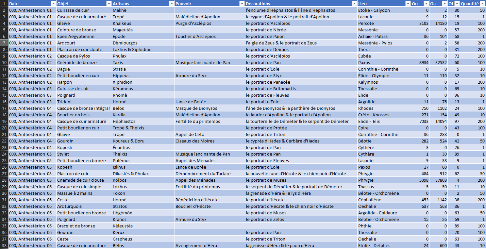

Bienvenue sur mon site portfolio
Découvrez mes travaux ainsi que mon univers
Cliquez sur le projet qui vous intéresse pour en savoir plus
sur son contenu et les compétences acquises

Communication
Base de données
Systèmes embarqués
Programmation orientée objet

Systèmes et Réseaux

Web
Projet Communication
Nous devons faire communiquer deux ordinateurs avec du son sans que personne ne l'entende. Le premier ordinateur envoie des ultrasons qui traverse un mur pour ensuite être capté par un micro. Ce micro est relié par un réseau filaire à l'ordinateur receveur du message.
Le projet dans son ensemble m'a permis d'apprendre :
- Les modulations d'onde (ici sonore), fréquence, amplitude et phase.
- Les filtres sonores.
- Les bases des protocoles réseaux.
- Les bases du langage python.
Modulations
La modulation du son nous permet de transmettre des bits de données. Nous avons 4 modulations d'amplitude sur 2 bits et 2 modulations de phases sur 1 bit. Ainsi chaque période d'un signal envoie 3 bits de données. Nous envoyons 3 signaux en même temps qui sont portés par une onde ultrasonore. Nous avions donc un débit théorique d'envoi de 72 kbits/s.
l'image ci-dessous récapitule l'encodage d'un signal sonore.
Tableau de correspondance bits/modulations

Protocoles réseaux
Le protocole réseau nous permet bien identifier chaque portion de signal à décoder et permet aussi de détecter des erreurs de transmissions potentielles. Pour identifier chaque trame nous avons un bit de start, un bit de stop, un identificateur avec le numéro de trame, un bit de parité et finalement le segment. Le segment qui contient la donnée avec le code correcteur de Hamming par-dessus pour détecter les erreurs.
l'image ci-dessous récapitule la composition d'une trame.
Modélisation de l'encapsulement d'une donnée

Programme en Python
Le programme en python nous permet de simuler l'envoie et la réception des données. c'est pourquoi nous avons un programme pour l'envoi et un autre pour la réception.
Le programme d'envoi va lire le message depuis un fichier texte et faire la conversion des caractères en binaires. il va ensuite découper la suite de bits pour obtenir des segments en y rajoutant les bits de contrôles de Hamming. Le programme va composer les trames comme vu plus haut. Enfin le programme va composer le signal sonore modulé et lire le son produit.
Voici le programme d'envoie complet.
Programme d'envoi
#coding:utf-8
#///////////////////////IMPORT DES MODULES////////////////////////////////////////////////////////
import pygame
import wave
import math
import binascii
import socket
import time
#//////////////////////////////PARTIE SOCKET///////////////////////////////////////////////////////
host, port = ('localhost',5566)
socket = socket.socket(socket.AF_INET,socket.SOCK_STREAM)
#/////////////////////COMPOSITION DES TRAMES//////////////////////////////////////////////////////
def decoupage(sequence,nb): # découpage de la données en octets
sequence = str(sequence)
segments = []
while len(sequence)%nb != 0:
sequence = sequence + '0'
print("WARNING, ajout de bit de bourrage")
for i in range(0,len(sequence),nb):
segments.append(sequence[i:i+nb])
return segments
def hamming(decoupage): # ajout du code correcteur de hamming sur nos octets
if type(decoupage) != list:
tmp = []
for i in range(len(decoupage)):
tmp.append(int(decoupage[i]))
decoupage = tmp
decoupage.insert(0,1) # insertion bit de contôle 1
decoupage.insert(1,1) # insertion bit de contrôle 2
decoupage.insert(3,1) #insertion bit de contrôle 4
decoupage.insert(7,1) # insertion bit de control 8
if (decoupage[2]+decoupage[4]+decoupage[6]+decoupage[8]+decoupage[10])%2 == 0:
decoupage[0] = 0
if (decoupage[2]+decoupage[5]+decoupage[6]+decoupage[9]+decoupage[10])%2 == 0:
decoupage[1] = 0
if (decoupage[4]+decoupage[5]+decoupage[6]+decoupage[11])%2 == 0:
decoupage[3] = 0
if (decoupage[8]+decoupage[9]+decoupage[10]+decoupage[11])%2 == 0:
decoupage[7] = 0
return decoupage
def numeroDeTrame(data,donnee):
number = 0
while 2**number < len(donnee)/8:
number +=1
liste = list(data)
n=2**number
x = bin(n)[2:]
c = bin(b)[2:]
liste_a = list(c)
liste.insert(0,c)
chaine = ''.join(str(i) for i in liste)
chaine = chaine.zfill((len(data)+number))
return list(chaine)
def rs232(hamming): # application du protocole rs232 + ajout N° de trame
hamming.insert(len(hamming)+2,0) # ajout du bit de parité
if hamming.count(1)%2 == 0:
hamming[-1] = 0
else:
hamming[-1] = 1
hamming.insert(0,1) # ajout du bit de start
hamming.insert(len(hamming)+2,1) # ajout du bit de stop
if hamming[1] == '1':
hamming[0] = 0
elif hamming[1] == '0':
hamming[0] = 1
if hamming[-2] == '1':
hamming[-1] = 0
elif hamming[-2] == '0':
hamming[-1] = 1
hamming = ''.join(str(i) for i in hamming)
return hamming
def StrBin(texte):
binaire = []
for n in texte:
binaire.insert(len(binaire)+1,bin(ord(n))[2:])
while len(binaire[-1]) < 8:
binaire[-1] = '0' + binaire[-1]
binaire = ''.join(binaire)
return binaire
#programme principal
config = open("E:/CESI/Projet/ondes/LeCode/config.txt","r")
texte = config.read()
print("\nVotre texte est : ",texte)
texte = StrBin(texte)
segments = decoupage(texte,8)
b = 1
for t in range(len(segments)):
segments[t] = hamming(segments[t])
segments[t] = numeroDeTrame(segments[t],texte)
segments[t] = rs232(segments[t])
print("\n",segments[t])
b +=1
try:
socket.connect((host,port))
print("\nvous êtes connecté au serveur ;")
data = ' '.join(segments)
data = data.encode("utf8")
socket.sendall(data)
except:
print("\nconnexion au serveur échouée :(")
finally:
socket.close()
#///////////////////////////PARTIE GÉNÉRATION DU SON/////////////////////////////////////////
Donnee = ''.join(segments)
TroisBits = decoupage(Donnee,3)
print("\nCréation d'un fichier audio au format WAV (PCM 8 bits mono 8000 Hz)")
NomFichier = 'son.wav'
Monson = wave.open(NomFichier,'w') # instanciation de l'objet Monson
nbCanal = 1 # mono
nbOctet = 1 # taille d'un échantillon : 1 octet = 8 bits
fech = 8000 # fréquence d'échantillonnage
frequence = float(input('\nFréquence du son(Hz) ? '))
niveau = 1 #float(input('Niveau du son du canal de gauche (0 à 1) ? '))
nbEchantillon = int(len(Donnee)/3)
parametres = (nbCanal,nbOctet,fech,nbEchantillon,'NONE','not compressed')# tuple
Monson.setparams(parametres) # création de l'en-tête (44 octets)
print('\nVeuillez patienter...')
amplitude = 0
phi = 0
for i in range(0,nbEchantillon):
if TroisBits[i][2] == '0': #####################
phi = 0 # Modulation de Phase
else:
phi = math.pi/2 #####################
if TroisBits[i][0:2] == '00': ###########################
amplitude = 127.5*niveau*0.25
elif TroisBits[i][0:2] == '01':
amplitude = 127.5*niveau*0.5 # Modulation d'amplitude
elif TroisBits[i][0:2] == '10':
amplitude = 127.5*niveau*0.75
elif TroisBits[i][0:2] == '11':
amplitude = 127.5*niveau*1.0 ############################
valG = wave.struct.pack('B',int(128+amplitude*math.sin(2.0*math.pi *frequence *i/fech + phi)))
Monson.writeframes(valG) # écriture frame
Monson.close()
print("\nFichier son crée.\nNombre d'échantillons : {}\nFréquence d'échantillonage : {}\nDurée du son : {}".format(nbEchantillon,fech,nbEchantillon/fech))
#//////////////////////////PARTIE LECTURE DU SON////////////////////////////////////////////////////////////////////////////
pygame.mixer.init()
pygame.mixer.Sound("son.wav").play()
while pygame.mixer.get_busy():
# lecture en cours
pass
time.sleep(500)
Dans un souci nous n'avons pas pu travailler sur la réception du son par un ordinateur, Nous avons donc simulé en écrivant les trames dans un fichier texte.
Le programme de réception va lire le fichier texte avec les trames envoyées, et reconvertir les bits en caractères. Le programme passe évidemment par la décomposition des trames ainsi que de tous les bits de contrôles.
Voici le programme de réception complet.
Programme de réception
#coding:utf-8
import time
code = open("E:/CESI/Projet/ondes/LeCode/data.txt",'r')
LeCode = code.read()
def number(donnee):
del donnee[1:-14]
return donnee
def trame(number):
number.pop(0)
number.pop(-1)
number.pop(-1)
return number
def octet(trame):
trame.pop(0)
trame.pop(0)
trame.pop(1)
trame.pop(4)
trame = ''.join(trame)
return trame
LeCode = LeCode.split()
print(LeCode)
tampon = []
for n in range(len(LeCode)):
LeCode[n] = list(LeCode[n])
tampon.append(octet(trame(number(LeCode[n]))))
LeCode = tampon
print("\n",LeCode)
decimal = []
for n in range(len(LeCode)):
LeCode[n] = list(LeCode[n])
tampon = 0
puissance = 7
for m in range(len(LeCode[n])):
if LeCode[n][m] == '1':
tampon += 2**puissance
puissance = puissance - 1
decimal.append(chr(tampon))
decimal = ''.join(decimal)
print("\n",decimal)
time.sleep(500)
Projet Base de données
Nous avons des informations de ventes sur 5 siècles réunies sur 1 seul fichier excel(300 000+ lignes). L'image ci-dessous illustre la situation initiale.

Le but du projet est d'organiser une base de données à partir de ces données initiales. Il faut aussi préparer par la suite des requêtes permettant d'exploiter les données comme par exemple, rajouter les données relatives à une nouvelle vente.
Le projet dans son ensemble m'a permis d'apprendre :
- Les bases de l'UML/SYSML (Diagramme de cas d'utilisation, exigences et de machine à état)
- Dictionnaire de données et matrice des dépendances fonctionnelles
- Modèle conceptuel/logique/physique de données
- Langage SQL sur wamp server (MySQL) avec phpmyadmin
- Arbres algébriques et algèbre relationnel (jointure, union, intersection etc.)
Analyse et Modélisation
Dans un premier temps, il nous a fallu établir précisément ce qu'il nous fallait réaliser pour répondre à la demande du client. C'est pourquoi nous avons réalisé des diagrammes UML comme le diagramme d'exigences. Nous avions 12 souhaits à réaliser et chacun nécessite des données de la situation initiale. L'image ci-dessous est un extrait du diagramme d'exigence.
Diagramme d'exigences

Ensuite nous avons créé notre dictionnaire de données et notre matrice de dépendances fonctionnelles en prenant en compte les données de départ. Une fois cela fait nous sommes passé à la modélisation de la base de données qui en découlait. Nous avons dû faire de nombreux choix parfois discutables comme mettre les provinces et cités dans la même entité. Cependant nous avons bien fait en sorte de simplifier au maximum la réalisation des souhaits(voir exigences) par la suite.
Dictionnaire de données
Matrice des dépendances fonctionnelles

Modèle conceptuel de données

Implémentation
Il est temps de passer à l'implémentation, c'est-à-dire créer la nouvelle base données à partir du modèle logique de données et migrer les données de départ dans cette nouvelle base. Il faut d'abord créer les tables puis réussir à récupérer les données à partir des données départ et cela fut le plus compliqué. L'exemple le plus flagrant est pour la table guerre où j'ai dû développer une fonction pour bien extraire chaque donnée. Voici un extrait des données initiales des guerres suivi de la solution réalisée.
Données "guerres" initiales

Solution SQL apportée (Procédure stockée avec curseurs)
-- -----------------------------------------------------------------------------
-- Table : Guerre
-- -----------------------------------------------------------------------------
CREATE TABLE `ventes`.`tmp_guerre` (
`lieu` VARCHAR(256) NOT NULL ,
`annee` VARCHAR(256) NOT NULL ,
`demidieu` VARCHAR(256)
) ENGINE = InnoDB;
-- -----------------------------------------------------------------------------
DELIMITER |
DROP FUNCTION IF EXISTS ventes_avant.reduce_str|
CREATE FUNCTION ventes_avant.reduce_str(
str VARCHAR(1312),
delim VARCHAR(50),
pos INT
) RETURNS VARCHAR(255)
RETURN
REPLACE(SUBSTRING(SUBSTRING_INDEX(str, delim, pos),
LENGTH(SUBSTRING_INDEX(str, delim, pos-1)) + 1),
delim, '')
|
-- -----------------------------------------------------------------------------
DELIMITER |
DROP PROCEDURE IF EXISTS ventes_avant.NewWar|
CREATE PROCEDURE ventes_avant.NewWar()
BEGIN
DECLARE LeDemiDieu VARCHAR(256); -- value
DECLARE LaAnnee VARCHAR(256); -- part
DECLARE LaGuerre VARCHAR(256); -- val
DECLARE compteur INT UNSIGNED DEFAULT 1;
DECLARE LaProvince VARCHAR(256);
DECLARE LesGuerres VARCHAR(1312);
DECLARE done INT DEFAULT FALSE;
DECLARE CurGuerre CURSOR FOR SELECT `Province/Citée`,
`Année de guerre - (Demi Dieu éventuel)`
FROM ventes_avant.guerre;
DECLARE CONTINUE HANDLER FOR NOT FOUND SET done = TRUE;
OPEN CurGuerre;
TRUNCATE TABLE ventes.tmp_guerre;
LaBoucle: LOOP
FETCH CurGuerre INTO LaProvince, LesGuerres;
IF done THEN
LEAVE LaBoucle;
END IF;
SET compteur = 1;
WHILE (CHAR_LENGTH(reduce_str(LesGuerres,';',compteur)) > 0) DO
SET LaGuerre = reduce_str(LesGuerres, ';', compteur);
SET LaAnnee = reduce_str(LaGuerre, ' ', 1);
SET LeDemiDieu = reduce_str(LaGuerre, ' ', 2);
INSERT INTO ventes.tmp_guerre (lieu, annee, demidieu)
VALUES (LaProvince, LaAnnee, LeDemiDieu);
SET compteur = compteur +1;
END WHILE;
END LOOP Laboucle;
CLOSE CurGuerre;
END |
CALL NewWar();
UPDATE ventes.tmp_guerre
SET demidieu = REPLACE(REPLACE(demidieu, "(", ""), ")", "")
WHERE demidieu LIKE "(%)";
UPDATE ventes.tmp_guerre
SET demidieu = NULL
WHERE demidieu LIKE "";
UPDATE ventes.tmp_guerre
SET lieu = SUBSTRING_INDEX(lieu, " - ", -1)
WHERE lieu LIKE "% - %";
CREATE TABLE ventes.`Guerre` (
`ID` INT UNSIGNED AUTO_INCREMENT NOT NULL,
`annee` INT NOT NULL,
`ID_DemiDieu` INT UNSIGNED ,
`ID_Lieu` INT UNSIGNED NOT NULL,
CONSTRAINT PK_Guerre
PRIMARY KEY(`ID`)
) ENGINE = InnoDB;
INSERT INTO ventes.guerre (`annee`, `ID_DemiDieu`, `ID_Lieu`)
SELECT war.annee, fighter.ID, field.ID
FROM ventes.tmp_guerre AS war
LEFT JOIN ventes.demidieu AS fighter
ON war.demidieu = fighter.nom
INNER JOIN ventes.lieu AS field
ON war.lieu = field.designation
;
DROP TABLE ventes.tmp_guerre;
Si cela vous intéresse le script complet (! 1200+ lignes) écrit à la main par mes soins se trouve tout en bas de cette page.
Exploiter/Opérer
Dernière phase du projet, il faut composer les requêtes permettant de répondre aux 12 souhaits de départ. Le principal problème a été d'optimiser les requêtes pour permettre à MySQL de les réaliser. L'un des souhaits les plus intéressants est pour l'ajout de nouvelles ventes. Celui-ci comprend un trigger qui déclenche une procédure stockée. Si cela vous intéresse, le script complet avec tous les souhaits se trouve tout en bas de cette page.
Souhait "ajout de nouvelles ventes" en SQL
-- -----------------------------------------------------------------------------
-- Wish 7
-- -----------------------------------------------------------------------------
CREATE TABLE `NewVente` (
`jour` DECIMAL(2,0) NOT NULL,
`mois` VARCHAR(100) NOT NULL,
`annee` DECIMAL(3,0),
`objet` VARCHAR(256) NOT NULL,
`quantité d'objet` INT UNSIGNED NOT NULL,
`Don à` VARCHAR(256),
`Lieu` VARCHAR(256),
`Divinité associée` VARCHAR(256)
) ENGINE = InnoDB;
DELIMITER |
DROP TRIGGER IF EXISTS insert_NV|
CREATE TRIGGER insert_NV AFTER INSERT
ON YFANSI.NewVente FOR EACH ROW
BEGIN
DECLARE LeJour DECIMAL(2,0);
DECLARE LeMois VARCHAR(100);
DECLARE LaAnnee DECIMAL(3,0);
DECLARE LeObjet VARCHAR(256);
DECLARE LaQte INT UNSIGNED;
DECLARE LeDon VARCHAR(256);
DECLARE LeLieu VARCHAR(256);
DECLARE LeDieu VARCHAR(256);
SET LeJour = NEW.jour;
SET LeMois = NEW.mois;
SET LaAnnee = NEW.annee;
SET LeObjet = NEW.objet;
SET LaQte = NEW.`quantité d'objet`;
SET LeDon = NEW.`Don à`;
SET LeLieu = NEW.Lieu;
SET LeDieu = NEW.`Divinité associée`;
CALL SP_insert_NV(LeJour, LeMois, LaAnnee, LeObjet, LaQte, LeDon, LeLieu, LeDieu);
END|
DELIMITER |
DROP PROCEDURE IF EXISTS SP_insert_NV|
CREATE PROCEDURE SP_insert_NV (
IN Pjour DECIMAL(2,0),
IN Pmois VARCHAR(256),
IN Pannee DECIMAL(3,0),
IN Pobjet VARCHAR(256),
IN Pqte INT UNSIGNED,
IN Pdon VARCHAR(256),
IN Plieu VARCHAR(256),
IN Pdieu VARCHAR(256)
)
BEGIN
DECLARE Psiecle DECIMAL(1,0);
DECLARE ID_Pmois INT UNSIGNED;
DECLARE ID_Pobjet INT UNSIGNED;
DECLARE ID_Pdon INT UNSIGNED DEFAULT NULL;
DECLARE ID_Plieu INT UNSIGNED DEFAULT NULL;
DECLARE ID_Pdieu INT DEFAULT NULL;
SELECT SUBSTRING(Pannee FROM 1 FOR 1) + 1 INTO Psiecle;
SELECT ID INTO ID_Pobjet
FROM objet
WHERE designation = Pobjet;
SELECT ID INTO ID_Pmois
FROM mois
WHERE designation = Pmois;
IF (Pdon IS NOT NULL) THEN
SELECT ID INTO ID_Pdon
FROM demidieu
WHERE nom = Pdon;
END IF;
IF (Plieu IS NOT NULL) THEN
SELECT ID INTO ID_Plieu
FROM lieu
WHERE designation = Plieu;
END IF;
IF (Pdieu IS NOT NULL) THEN
SELECT ID INTO ID_Pdieu
FROM dieu
WHERE nom = Pdieu;
END IF;
INSERT INTO YFANSI.vente (`jour`, `annee`, `siecle`, `quantite_objet`,
`ID_Objet`, `ID_Mois`, `ID_DemiDieu`, `ID_Lieu`, `ID_Dieu`)
VALUES (Pjour, Pannee, Psiecle, Pqte, ID_Pobjet, ID_Pmois, ID_Pdon, ID_Plieu, ID_Pdieu);
END|
Je vais prendre l'exemple du souhait 4 pour vous montrer un résultat final bien illustré. Ce souhait consiste à comparer l'évolution des ventes de l'Ægypte par rapport à toutes les autres provinces. Comme vous pourrez le constater le nombre de ventes évolue de façon similaire dans les deux cas. Voici le script SQL réalisé suivi du diagramme réalisé sur excel.
Souhait 4 en SQL
-- -----------------------------------------------------------------------------
-- Wish 4
-- -----------------------------------------------------------------------------
CREATE VIEW `Wish 4` AS
SELECT LaProvince.*, lesAutres.Autres
FROM (
SELECT annee, COUNT(*) AS `AEgypte`
FROM vente
WHERE ID_Lieu = 4
GROUP BY vente.annee
) AS LaProvince
INNER JOIN (
SELECT annee, ROUND(AVG(`Autres`)) AS `Autres`
FROM (
SELECT annee, ID_Lieu, COUNT(*) AS `Autres` FROM vente
WHERE ID_Lieu != 4
GROUP BY ID_Lieu, annee
) AS t1
GROUP BY annee
) AS LesAutres
ON LaProvince.annee = LesAutres.annee
;
Diagramme du souhait 4
Scripts complets
Implémentation
-- -----------------------------------------------------------------------------
-- Table : Type_Option
-- -----------------------------------------------------------------------------
CREATE TABLE ventes.`Type_Option` (
`ID` INT AUTO_INCREMENT NOT NULL,
`designation` VARCHAR(100) NOT NULL,
CONSTRAINT PK_Type_Option
PRIMARY KEY(`id`)
) ENGINE = InnoDB ;
INSERT INTO `Type_Option`(`designation`)
VALUES ("pouvoir"), ("décoration");
-- -----------------------------------------------------------------------------
-- Table : Dieu
-- -----------------------------------------------------------------------------
CREATE TABLE ventes.`Dieu` (
`ID` INT AUTO_INCREMENT NOT NULL,
`nom` VARCHAR(256) NOT NULL,
CONSTRAINT PK_Dieu
PRIMARY KEY(`ID`)
) ENGINE = InnoDB;
SELECT DISTINCT `Fils ou Fille de` -- > DIEUX
FROM ventes_avant.demidieu;
/*
SELECT SUBSTRING_INDEX(Deco, " d'", -1) AS Deco VERIF DES INFOS DU SELECT
FROM (
SELECT DISTINCT Deco_1 AS Deco FROM ventes_avant.tmp_deco DEPUIS LA TABLE DES VENTES
UNION
SELECT DISTINCT Deco_2 FROM ventes_avant.tmp_deco
) AS tmp_deco1
WHERE Deco LIKE "% d'%"
UNION -- listes des décos différentes
SELECT SUBSTRING_INDEX(Deco, " de ", -1) AS Deco
FROM (
SELECT DISTINCT Deco_1 AS Deco FROM ventes_avant.tmp_deco
UNION
SELECT DISTINCT Deco_2 FROM ventes_avant.tmp_deco
) AS tmp_deco2
WHERE Deco NOT LIKE "% d'%"
;
*/
INSERT INTO `Dieu` (`nom`)
SELECT DISTINCT `Fils ou Fille de`
FROM ventes_avant.demidieu;
-- -----------------------------------------------------------------------------
-- Table : DemiDieu
-- -----------------------------------------------------------------------------
CREATE TABLE `ventes`.`DemiDieu` (
`ID` INT UNSIGNED AUTO_INCREMENT NOT NULL,
`nom` VARCHAR(256) NOT NULL,
`ID_Dieu` INT NOT NULL,
CONSTRAINT PK_DemiDieu
PRIMARY KEY(`ID`)
) ENGINE = InnoDB;
INSERT INTO ventes.demidieu (`nom`, `ID_Dieu`)
SELECT DISTINCT SUBSTRING(child.`Demi Dieu` FROM 2), parent.ID
FROM ventes_avant.demidieu AS child -- DEMIDIEUX
INNER JOIN ventes.Dieu AS parent
ON child.`Fils ou fille de` = parent.nom
;
-- -----------------------------------------------------------------------------
-- Table : Guerre
-- -----------------------------------------------------------------------------
CREATE TABLE `ventes`.`tmp_guerre` (
`lieu` VARCHAR(256) NOT NULL ,
`annee` VARCHAR(256) NOT NULL ,
`demidieu` VARCHAR(256)
) ENGINE = InnoDB;
-- -----------------------------------------------------------------------------
DELIMITER |
DROP FUNCTION IF EXISTS ventes_avant.reduce_str|
CREATE FUNCTION ventes_avant.reduce_str(
str VARCHAR(1312),
delim VARCHAR(50),
pos INT
) RETURNS VARCHAR(255)
RETURN
REPLACE(SUBSTRING(SUBSTRING_INDEX(str, delim, pos),
LENGTH(SUBSTRING_INDEX(str, delim, pos-1)) + 1),
delim, '')
|
-- -----------------------------------------------------------------------------
DELIMITER |
DROP PROCEDURE IF EXISTS ventes_avant.NewWar|
CREATE PROCEDURE ventes_avant.NewWar()
BEGIN
DECLARE LeDemiDieu VARCHAR(256); -- value
DECLARE LaAnnee VARCHAR(256); -- part
DECLARE LaGuerre VARCHAR(256); -- val
DECLARE compteur INT UNSIGNED DEFAULT 1;
DECLARE LaProvince VARCHAR(256);
DECLARE LesGuerres VARCHAR(1312);
DECLARE done INT DEFAULT FALSE;
DECLARE CurGuerre CURSOR FOR SELECT `Province/Citée`,
`Année de guerre - (Demi Dieu éventuel)`
FROM ventes_avant.guerre;
DECLARE CONTINUE HANDLER FOR NOT FOUND SET done = TRUE;
OPEN CurGuerre;
TRUNCATE TABLE ventes.tmp_guerre;
LaBoucle: LOOP
FETCH CurGuerre INTO LaProvince, LesGuerres;
IF done THEN
LEAVE LaBoucle;
END IF;
SET compteur = 1;
WHILE (CHAR_LENGTH(reduce_str(LesGuerres,';',compteur)) > 0) DO
SET LaGuerre = reduce_str(LesGuerres, ';', compteur);
SET LaAnnee = reduce_str(LaGuerre, ' ', 1);
SET LeDemiDieu = reduce_str(LaGuerre, ' ', 2);
INSERT INTO ventes.tmp_guerre (lieu, annee, demidieu)
VALUES (LaProvince, LaAnnee, LeDemiDieu);
SET compteur = compteur +1;
END WHILE;
END LOOP Laboucle;
CLOSE CurGuerre;
END |
CALL NewWar();
UPDATE ventes.tmp_guerre
SET demidieu = REPLACE(REPLACE(demidieu, "(", ""), ")", "")
WHERE demidieu LIKE "(%)";
UPDATE ventes.tmp_guerre
SET demidieu = NULL
WHERE demidieu LIKE "";
UPDATE ventes.tmp_guerre
SET lieu = SUBSTRING_INDEX(lieu, " - ", -1)
WHERE lieu LIKE "% - %";
CREATE TABLE ventes.`Guerre` (
`ID` INT UNSIGNED AUTO_INCREMENT NOT NULL,
`annee` INT NOT NULL,
`ID_DemiDieu` INT UNSIGNED ,
`ID_Lieu` INT UNSIGNED NOT NULL,
CONSTRAINT PK_Guerre
PRIMARY KEY(`ID`)
) ENGINE = InnoDB;
INSERT INTO ventes.guerre (`annee`, `ID_DemiDieu`, `ID_Lieu`)
SELECT war.annee, fighter.ID, field.ID
FROM ventes.tmp_guerre AS war
LEFT JOIN ventes.demidieu AS fighter
ON war.demidieu = fighter.nom
INNER JOIN ventes.lieu AS field
ON war.lieu = field.designation
;
DROP TABLE ventes.tmp_guerre;
-- -----------------------------------------------------------------------------
-- Table : Moulaga ( Union des 5 siècles de ventes )
-- -----------------------------------------------------------------------------
CREATE TABLE `Moulaga` AS
SELECT * FROM ventes_avant.siecle1
UNION ALL
SELECT * FROM ventes_avant.siecle2
UNION ALL
SELECT * FROM ventes_avant.siecle3
UNION ALL
SELECT * FROM ventes_avant.siecle4
UNION ALL
SELECT * FROM ventes_avant.siecle5;
ALTER TABLE `Moulaga`
ADD COLUMN `ID` INT AUTO_INCREMENT NOT NULL FIRST,
ADD CONSTRAINT PK_Moulaga
PRIMARY KEY(`ID`),
ADD INDEX `ID_Deco`(`ID`, `Decoration`)
;
-- -----------------------------------------------------------------------------
-- Table : Option
-- -----------------------------------------------------------------------------
CREATE TABLE `ventes`.`Option` (
`ID` INT UNSIGNED AUTO_INCREMENT NOT NULL,
`designation` VARCHAR(256) NOT NULL,
`ID_Type_Option` INT NOT NULL,
CONSTRAINT PK_Option
PRIMARY KEY(`ID`)
) ENGINE = InnoDB;
-- -----------------------------------------------------------------------------
CREATE TABLE `tmp_deco` AS
SELECT DISTINCT SUBSTRING_INDEX(`Decoration`, ' &', 1) AS Deco_1,
SUBSTRING_INDEX(`Decoration`, '& ', -1) AS Deco_2
FROM ventes_avant.Moulaga
WHERE Decoration LIKE '%&%'
UNION
SELECT DISTINCT SUBSTRING_INDEX(`Decoration`, ' &', 1) AS Deco_1,
'' AS Deco_2
FROM ventes_avant.Moulaga
WHERE Decoration NOT LIKE '%&%'
;
-- -----------------------------------------------------------------------------
INSERT INTO ventes.option(`designation`, `ID_Type_Option`)
SELECT DISTINCT SF_split(Deco_1, 1), 2 FROM ventes_avant.tmp_deco
WHERE Deco_1 NOT LIKE ""
UNION
SELECT DISTINCT SF_split(Deco_2, 1), 2 FROM ventes_avant.tmp_deco
WHERE Deco_2 NOT LIKE ""
;
-- -----------------------------------------------------------------------------
INSERT INTO ventes.option(`designation`, `ID_Type_Option`)
SELECT DISTINCT `Pouvoir`, 1 FROM ventes_avant.moulaga2
WHERE `Pouvoir` NOT LIKE ""
;
-- -----------------------------------------------------------------------------
-- Table : Artisan
-- -----------------------------------------------------------------------------
CREATE TABLE `tmp_artisans` AS
SELECT DISTINCT Artisan FROM ventes_avant.moulaga;
CREATE TABLE `ventes`.`Artisan` (
`ID` INT UNSIGNED AUTO_INCREMENT NOT NULL,
`nom` VARCHAR(256) NOT NULL,
CONSTRAINT PK_Artisan
PRIMARY KEY(`ID`)
) ENGINE = InnoDB;
INSERT INTO ventes.Artisan(`nom`)
SELECT SUBSTRING_INDEX(`Artisan`, " & ", 1) FROM ventes_avant.tmp_artisans
UNION
SELECT SUBSTRING_INDEX(`Artisan`, " & ", -1) FROM ventes_avant.tmp_artisans
;
-- -----------------------------------------------------------------------------
-- Table : conclure
-- -----------------------------------------------------------------------------
CREATE TABLE `tmp_conclure` AS
SELECT `ID`, `Artisan`
FROM ventes_avant.moulaga
;
CREATE TABLE `ventes_avant`.`tmp_conclure2` AS
SELECT `ID`, SUBSTRING_INDEX(`Artisan`, " & ", 1) AS nom
FROM ventes_avant.tmp_conclure
UNION ALL
SELECT `ID`, SUBSTRING_INDEX(`Artisan`, " & ", -1) AS nom
FROM ventes_avant.tmp_conclure
WHERE `Artisan` LIKE "% & %"
;
CREATE TABLE `ventes`.`conclure` (
`ID_Vente` INT UNSIGNED NOT NULL,
`ID_Artisan` INT UNSIGNED NOT NULL
) ENGINE = InnoDB;
INSERT INTO ventes.conclure (`ID_Vente`, `ID_Artisan`)
SELECT ccl.ID AS ID_Vente, art.ID AS ID_Artisan
FROM ventes_avant.tmp_conclure2 AS ccl
INNER JOIN ventes.Artisan AS art
ON ccl.nom = art.nom
;
-- -----------------------------------------------------------------------------
-- Deuxième Table vente temporaire
-- -----------------------------------------------------------------------------
CREATE TABLE `Moulaga2` AS
SELECT `ID`, `Date`, `Objet`, `Pouvoir`, `Decoration`, `Lieu`, `Oo`, `Oa`, `Of`, `Quantite`
FROM ventes_avant.moulaga
;
-- -----------------------------------------------------------------------------
-- Table : Objet
-- -----------------------------------------------------------------------------
CREATE TABLE `ventes`.`Objet` (
`ID` INT UNSIGNED AUTO_INCREMENT NOT NULL,
`designation` VARCHAR(256) NOT NULL,
CONSTRAINT PK_Objet
PRIMARY KEY(`ID`)
) ENGINE = InnoDB;
CREATE TABLE `ventes_avant`.`tmp_objet`
SELECT DISTINCT `objet`
FROM ventes_avant.moulaga2;
INSERT INTO `ventes`.`Objet` (`designation`)
SELECT objet FROM ventes_avant.tmp_objet;
-- -----------------------------------------------------------------------------
-- Table : Mois
-- -----------------------------------------------------------------------------
CREATE TABLE `ventes`.`Mois` (
`ID` INT UNSIGNED AUTO_INCREMENT NOT NULL,
`designation` VARCHAR(100) NOT NULL,
`ordre` TINYINT UNSIGNED NOT NULL,
`ID_Dieu` INT NOT NULL,
CONSTRAINT PK_Mois
PRIMARY KEY(`ID`)
) ENGINE = InnoDB;
CREATE TABLE `ventes_avant`.`tmp_mois` AS
SELECT `Mois`, `Divinité fétée` AS Party, God.ID
FROM ventes_avant.mois AS Month
INNER JOIN ventes.Dieu AS God
ON Month.`Divinité fétée` = God.nom
;
INSERT INTO `ventes`.`Mois` (`designation`, `ID_Dieu`)
SELECT `Mois`, `ID`
FROM ventes_avant.tmp_mois
;
UPDATE `mois` SET `ordre` = '1' WHERE `mois`.`ID` = 11;
UPDATE `mois` SET `ordre` = '2' WHERE `mois`.`ID` = 8;
UPDATE `mois` SET `ordre` = '3' WHERE `mois`.`ID` = 3;
UPDATE `mois` SET `ordre` = '4' WHERE `mois`.`ID` = 7;
UPDATE `mois` SET `ordre` = '5' WHERE `mois`.`ID` = 6;
UPDATE `mois` SET `ordre` = '6' WHERE `mois`.`ID` = 2;
UPDATE `mois` SET `ordre` = '7' WHERE `mois`.`ID` = 4;
UPDATE `mois` SET `ordre` = '8' WHERE `mois`.`ID` = 10;
UPDATE `mois` SET `ordre` = '9' WHERE `mois`.`ID` = 12;
UPDATE `mois` SET `ordre` = '10' WHERE `mois`.`ID` = 9;
UPDATE `mois` SET `ordre` = '11' WHERE `mois`.`ID` = 5;
UPDATE `mois` SET `ordre` = '12' WHERE `mois`.`ID` = 1;
-- -----------------------------------------------------------------------------
-- Table Monnaie
-- -----------------------------------------------------------------------------
CREATE TABLE `ventes`.`Monnaie` (
`ID` INT AUTO_INCREMENT NOT NULL,
`designation` VARCHAR(100) NOT NULL,
`abreviation` VARCHAR(3) NOT NULL,
`quantite` INT NOT NULL,
`ID_Monnaie_conversion` INT NOT NULL,
CONSTRAINT PK_Monnaie
PRIMARY KEY(`ID`)
) ENGINE = InnoDB;
INSERT INTO ventes.monnaie(`designation`, `quantite`, `abreviation`, `ID_Monnaie_conversion`)
SELECT `Monnaie`, `Conversion`, `Monnaie de conversion`, 5
FROM ventes_avant.Monnaie
;
-- -----------------------------------------------------------------------------
-- Table : Lieu
-- -----------------------------------------------------------------------------
CREATE TABLE `ventes`.`Lieu` (
`ID` INT UNSIGNED NOT NULL,
`designation` VARCHAR(256) NOT NULL,
`ID_Province` INT UNSIGNED,
CONSTRAINT PK_Lieu
PRIMARY KEY(`ID`)
) ENGINE = InnoDB ;
CREATE TABLE `ventes`.`tmp_Lieu` (
`ID` INT UNSIGNED AUTO_INCREMENT NOT NULL,
`designation` VARCHAR(256) NOT NULL,
) ENGINE = InnoDB ;
INSERT INTO `ventes`.`tmp_Lieu`(`designation`)
SELECT CONCAT_WS(" ", `Province`, `Ville`)
FROM ventes_avant.province
;
CREATE TABLE `ventes`.`tmp_lieu2` AS
SELECT *, SUBSTRING_INDEX(`designation`, " ", 1) AS province
FROM ventes.tmp_lieu
;
CREATE TABLE `ventes`.`tmp_lieu3` AS
SELECT tmp_lieu2.ID, SUBSTRING_INDEX(tmp_lieu2.designation, " ", -1) AS `designation`, tmp_Lieu.ID AS `ID_province`
FROM ventes.tmp_lieu2
LEFT JOIN ventes.tmp_lieu
ON tmp_lieu2.province = tmp_lieu.designation
;
INSERT INTO ventes.lieu (`ID`, `designation`, `ID_Province`)
SELECT ID, designation , ID_Province
FROM ventes.tmp_lieu3
;
UPDATE ventes.lieu SET id_province = NULL
WHERE ID = ID_Province;
ALTER TABLE `ventes`.`lieu`
MODIFY `ID` INT UNSIGNED AUTO_INCREMENT NOT NULL
;
DROP TABLE `ventes`.`tmp_lieu`;
DROP TABLE `ventes`.`tmp_lieu2`;
DROP TABLE `ventes`.`tmp_lieu3`;
-- -----------------------------------------------------------------------------
-- Table : inspirer
-- -----------------------------------------------------------------------------
CREATE TABLE ventes_avant.`tmp_inspirer` AS
SELECT DISTINCT `pouvoir`, `Decoration`
FROM ventes_avant.moulaga2
;
CREATE TABLE ventes_avant.`tmp_inspirer2` AS
SELECT pouvoir, SUBSTRING_INDEX(decoration, " & ", 1) AS Deco
FROM ventes_avant.tmp_inspirer
WHERE decoration LIKE "% & %"
UNION
SELECT pouvoir, SUBSTRING_INDEX(decoration, " & ", -1) AS Deco
FROM ventes_avant.tmp_inspirer
WHERE decoration LIKE "% & %"
UNION
SELECT pouvoir, decoration
FROM ventes_avant.tmp_inspirer
WHERE decoration NOT LIKE "% & %"
;
DELIMITER |
DROP FUNCTION IF EXISTS ventes_avant.SF_split|
CREATE FUNCTION ventes_avant.SF_split (
Decorazion VARCHAR(256),
Choice TINYINT
) RETURNS VARCHAR(256)
BEGIN
DECLARE TheExit VARCHAR(256);
DECLARE DecoName VARCHAR(256);
DECLARE GodName VARCHAR(256);
DECLARE done INT DEFAULT FALSE;
DECLARE CurGod CURSOR FOR SELECT `nom` FROM ventes.Dieu;
DECLARE CONTINUE HANDLER FOR NOT FOUND SET done = TRUE;
OPEN CurGod;
LaBoucle: LOOP
FETCH CurGod INTO GodName;
IF done THEN
LEAVE LaBoucle;
ELSEIF (Decorazion LIKE CONCAT("%",GodName,"%")) THEN
IF (Choice = 2) THEN
SET TheExit = GodName;
ELSEIF (Choice = 1) THEN
SET DecoName = SUBSTRING_INDEX(Decorazion, GodName, 1);
IF (DecoName LIKE "% d'") THEN
SET TheExit = SUBSTRING_INDEX(DecoName, " d'", 1);
ELSEIF (DecoName LIKE "% de " AND DecoName NOT LIKE "% de % de ") THEN
SET TheExit = SUBSTRING_INDEX(DecoName, " de", 1);
ELSEIF (DecoName LIKE "% de % de ") THEN
SET TheExit = SUBSTRING_INDEX(DecoName, " de", 2);
ELSE
SET TheExit = "je n'existe pas";
END IF;
ELSE
SET TheExit = "Error : 2nd argument is incorrect";
END IF;
END IF;
END LOOP LaBoucle;
CLOSE CurGod;
RETURN TRIM(TheExit);
END|
CREATE TABLE `tmp_inspirer3` AS
SELECT inspired.*, dto.ID AS ID_Deco, beerus.ID AS ID_Dieu, powa.ID AS ID_powa
FROM (
SELECT Pouvoir,SF_split(Deco, 1) AS decorazion, SF_split(Deco, 2) AS God
FROM ventes_avant.tmp_inspirer2
) AS inspired
LEFT JOIN ventes.option AS dto
ON inspired.decorazion = dto.designation
LEFT JOIN ventes.dieu AS beerus
ON inspired.God = beerus.nom
LEFT JOIN ventes.option AS powa
ON inspired.pouvoir = powa.designation
;
SELECT * FROM ventes.Dieu
WHERE nom LIKE "Kronos"; -- > 11
UPDATE `tmp_inspirer3`
SET `ID_Dieu` = 11
WHERE pouvoir = "Appétit de Kronos";
-- -----------------------------------------------------------------------------
CREATE TABLE ventes.`inspirer` (
`ID_Option` INT UNSIGNED NOT NULL,
`ID_Dieu` INT UNSIGNED NOT NULL
) ENGINE = InnoDB;
INSERT INTO ventes.inspirer (ID_Option, ID_Dieu)
SELECT ID_Deco, ID_Dieu
FROM ventes_avant.tmp_inspirer3
WHERE ID_Deco IS NOT NULL
UNION
SELECT ID_powa, ID_Dieu
FROM ventes_avant.tmp_inspirer3
WHERE ID_powa IS NOT NULL AND ID_Dieu IS NOT NULL
;
-- -----------------------------------------------------------------------------
-- Table : optionner
-- -----------------------------------------------------------------------------
CREATE TABLE `ventes_avant`.`tmp_optionner` AS
SELECT ID, pouvoir
FROM ventes_avant.moulaga2
WHERE pouvoir NOT LIKE ""
;
CREATE TABLE `ventes_avant`.`tmp_optionner2` AS
SELECT ID, SUBSTRING_INDEX(decoration, " &", 1) AS Deco
FROM ventes_avant.moulaga2
WHERE decoration NOT LIKE ""
UNION ALL
SELECT ID, SUBSTRING_INDEX(decoration, "& ", -1)
FROM ventes_avant.moulaga2
WHERE decoration NOT LIKE ""
AND decoration LIKE "%&%"
;
-- !!!!!!!!!!!!!!!!!!!!!!!!!!!!!!!!!!!!!!!!!!!!!!!!!!!!!!!!!!!!!!!!!!!!!!!!!!!!!
CREATE TABLE ventes_avant.tmp_optionner3 (
`ID_vente` INT UNSIGNED NOT NULL,
`designation` VARCHAR(256) NOT NULL
);
INSERT INTO ventes_avant.tmp_optionner3 (ID_vente, designation)
SELECT ID, SF_split(Deco, 1) AS decorazion
FROM ventes_avant.tmp_optionner2
;
-- à faire sur invite de commande car très lourd
-- !!!!!!!!!!!!!!!!!!!!!!!!!!!!!!!!!!!!!!!!!!!!!!!!!!!!!!!!!!!!!!!!!!!!!!!!!!!!!
CREATE TABLE ventes.`optionner` (
`ID_Vente` INT UNSIGNED NOT NULL,
`ID_Option` INT UNSIGNED NOT NULL
) ENGINE = InnoDB;
INSERT INTO ventes.optionner (ID_Vente, ID_Option)
SELECT ID_Vente, table2.ID AS ID_Option FROM (
SELECT ID_Vente, designation FROM ventes_avant.tmp_optionner3
UNION
SELECT ID, pouvoir FROM ventes_avant.tmp_optionner
) AS table1
INNER JOIN ventes.option AS table2
ON table1.designation = table2.designation
;
-- -----------------------------------------------------------------------------
-- Table : valoriser
-- -----------------------------------------------------------------------------
CREATE TABLE ventes_avant.tmp_valoriser AS
SELECT ID AS ID_Vente, 1 AS ID_Monnaie, `Oo` AS Quantite
FROM ventes_avant.Moulaga2
WHERE `Oo` <> 0
;
CREATE TABLE ventes_avant.tmp_valoriser2 AS
SELECT ID AS ID_Vente, 2 AS ID_Monnaie, `Oa` AS Quantite
FROM ventes_avant.Moulaga2
WHERE `Oa` <> 0
;
CREATE TABLE ventes_avant.tmp_valoriser3 AS
SELECT ID AS ID_Vente, 3 AS ID_Monnaie, moulaga2.`Of` AS Quantite
FROM ventes_avant.Moulaga2
WHERE `Of` <> 0
;
-- -----------------------------------------------------------------------------
CREATE TABLE ventes.`valoriser` (
`ID_Vente` INT UNSIGNED NOT NULL,
`ID_Monnaie` INT NOT NULL,
`quantite_monnaie` INT UNSIGNED NOT NULL
) ENGINE = InnoDB;
INSERT INTO ventes.valoriser(ID_Vente, ID_Monnaie, quantite_monnaie)
SELECT ID_Vente, ID_Monnaie, Quantite
FROM ventes_avant.tmp_valoriser
UNION
SELECT ID_Vente, ID_Monnaie, Quantite
FROM ventes_avant.tmp_valoriser2
UNION
SELECT ID_Vente, ID_Monnaie, Quantite
FROM ventes_avant.tmp_valoriser3
;
-- -----------------------------------------------------------------------------
-- Table : moulaga3
-- -----------------------------------------------------------------------------
CREATE TABLE ventes_avant.moulaga3 AS
SELECT ID, `Date`, Objet, Pouvoir, Decoration, Lieu, Quantite
FROM ventes_avant.Moulaga2
;
-- -----------------------------------------------------------------------------
-- Table : Vente
-- -----------------------------------------------------------------------------
-- Relier aux Dieux-------------------------------------------------------------
-- !!!!!!!!!!!!!!!!!!!!!!!!!!!!!!!!!!!!!!!!!!!!!!!!!!!!!!!!!!!!!!!!!!!!!!!!!!!!!
CREATE TABLE ventes_avant.tmp_vente AS
SELECT ID, SF_split(decoration, 2) AS DecoDieu
FROM ventes_avant.moulaga3
WHERE (decoration NOT LIKE "" AND pouvoir LIKE "")
OR (decoration NOT LIKE "" AND pouvoir NOT LIKE "")
; -- invite de commande
-- !!!!!!!!!!!!!!!!!!!!!!!!!!!!!!!!!!!!!!!!!!!!!!!!!!!!!!!!!!!!!!!!!!!!!!!!!!!!!
SELECT tablea.ID AS ID_Vente, tableb.ID AS ID_Dieu
FROM ventes_avant.tmp_vente AS tablea
INNER JOIN ventes.Dieu AS tableb
ON tablea.decodieu = tableb.nom
CREATE TABLE ventes_avant.tmp_vente2 AS
SELECT ID, pouvoir
FROM ventes_avant.moulaga3
WHERE pouvoir NOT LIKE "" AND decoration LIKE ""
;
CREATE TABLE ventes_avant.tmp_vente3 AS
SELECT tablea.ID AS ID_Vente, tableb.ID AS ID_Dieu
FROM ventes_avant.tmp_vente AS tablea
INNER JOIN ventes.Dieu AS tableb
ON tablea.decodieu = tableb.nom
UNION
SELECT table1.ID AS ID_Vente, table3.ID_Dieu
FROM ventes_avant.tmp_vente2 AS table1
INNER JOIN ventes.option AS table2
ON table1.pouvoir = table2.designation
INNER JOIN ventes.inspirer AS table3
ON table2.ID = table3.ID_Option
;
-- !!!!!!!!!!!!!!!!!!!!!!!!!!!!!!!!!!!!!!!!!!!!!!!!!!!!!!!!!!!!!!!!!!!!!!!!!!!!!
CREATE TABLE ventes_avant.moulaga4 (
`ID` INT UNSIGNED NOT NULL,
`Date` VARCHAR(256) NOT NULL,
`Objet` VARCHAR(256) NOT NULL,
`Lieu` VARCHAR(256) NOT NULL,
`Quantite` INT UNSIGNED NOT NULL,
`ID_Dieu` INT UNSIGNED
);
ALTER TABLE ventes_avant.moulaga3
ADD INDEX moulaga3(`ID`)
;
ALTER TABLE ventes_avant.tmp_vente3
ADD INDEX tmp_vente3(`ID_Vente`)
;
INSERT INTO ventes_avant.moulaga4 (`ID`, `Date`, `Objet`, `Lieu`, `Quantite`, `ID_Dieu`)
SELECT table1.ID, table1.Date, table1.Objet, table1.Lieu, table1.Quantite, table2.ID_Dieu
FROM ventes_avant.moulaga3 AS table1
LEFT JOIN ventes_avant.tmp_vente3 AS table2
ON table1.ID = table2.ID_Vente
; -- invite de commande
-- !!!!!!!!!!!!!!!!!!!!!!!!!!!!!!!!!!!!!!!!!!!!!!!!!!!!!!!!!!!!!!!!!!!!!!!!!!!!!
-- Relier Objet-----------------------------------------------------------------
CREATE TABLE ventes_avant.moulaga5 (
`ID` INT UNSIGNED NOT NULL,
`Date` VARCHAR(256) NOT NULL,
`Lieu` VARCHAR(256) NOT NULL,
`Quantite` INT UNSIGNED NOT NULL,
`ID_Dieu` INT UNSIGNED,
`ID_Objet` INT UNSIGNED NOT NULL
);
ALTER TABLE ventes_avant.moulaga4
ADD INDEX moulaga4(`ID`)
;
INSERT INTO ventes_avant.moulaga5 (`ID`, `Date`, `Lieu`, `Quantite`, `ID_Dieu`, `ID_Objet`)
SELECT table1.`ID`, `Date`, `Lieu`, `Quantite`, `ID_Dieu`, table2.ID AS ID_Objet
FROM ventes_avant.moulaga4 AS table1
INNER JOIN ventes.Objet AS table2
ON table1.Objet = table2.designation
;
-- Relier Lieu et demidieu------------------------------------------------------
ALTER TABLE ventes_avant.moulaga5
ADD INDEX DemiLieu(`lieu`)
;
CREATE TABLE ventes_avant.relierlieu1 AS
SELECT table1.ID, table2.ID AS ID_Lieu FROM (
SELECT ID, `Date`, TRIM(SUBSTRING_INDEX(Lieu, "- ", -1)) AS lieu,
Quantite, ID_Dieu, ID_Objet
FROM ventes_avant.moulaga5
) AS table1
INNER JOIN ventes.lieu AS table2
ON table1.Lieu = table2.designation
;
CREATE TABLE ventes_avant.relierlieu2 AS
SELECT table3.ID, table4.ID AS ID_DemiDieu FROM (
SELECT ID, `Date`, SUBSTRING(SUBSTRING_INDEX(lieu, " ", -1) FROM 2) AS DD,
Quantite, ID_Dieu, ID_Objet
FROM ventes_avant.moulaga5
WHERE lieu LIKE "Demi Dieu%"
) AS table3
LEFT JOIN ventes.DemiDieu AS table4
ON table3.DD = table4.nom
;
ALTER TABLE ventes_avant.moulaga5
ADD INDEX moulaga5(`ID`)
;
ALTER TABLE ventes_avant.relierlieu1
ADD INDEX relierlieu1(`ID`)
;
ALTER TABLE ventes_avant.relierlieu2
ADD INDEX relierlieu2(`ID`)
;
CREATE TABLE ventes_avant.moulaga6 (
`ID` INT UNSIGNED NOT NULL,
`Date` VARCHAR(256) NOT NULL,
`Quantite` INT UNSIGNED NOT NULL,
`ID_Dieu` INT UNSIGNED,
`ID_Objet` INT UNSIGNED NOT NULL,
`ID_Lieu` INT UNSIGNED,
`ID_DemiDieu` INT UNSIGNED
);
INSERT INTO ventes_avant.moulaga6 (`ID`, `Date`, `Quantite`, `ID_Dieu`, `ID_Objet`, `ID_Lieu`, `ID_DemiDieu`)
SELECT table1.ID, `Date`, Quantite, ID_Dieu, ID_Objet, table2.ID_Lieu, table3.ID_DemiDieu
FROM ventes_avant.moulaga5 AS table1
LEFT JOIN ventes_avant.relierlieu1 AS table2
ON table1.ID = table2.ID
LEFT JOIN ventes_avant.relierlieu2 AS table3
ON table1.ID = table3.ID
;
-- Décomposition de la date et finalisation de la table vente-------------------
CREATE TABLE ventes.`Vente` (
`ID` INT UNSIGNED NOT NULL,
`jour` DECIMAL(2,0) NOT NULL,
`annee` DECIMAL(3,0) NOT NULL,
`siecle` DECIMAL(1,0) NOT NULL DEFAULT 0,
`quantite_objet` INT UNSIGNED NOT NULL,
`ID_Objet` INT UNSIGNED NOT NULL,
`ID_Mois` INT UNSIGNED NOT NULL,
`ID_DemiDieu` INT UNSIGNED,
`ID_Lieu` INT UNSIGNED,
`ID_Dieu` INT,
CONSTRAINT PK_Vente
PRIMARY KEY(`ID`)
) ENGINE = InnoDB;
INSERT INTO ventes.vente (`ID`, `annee`, `jour`, `quantite_objet`,
`ID_Dieu`, `ID_Objet`, `ID_Lieu`, `ID_DemiDieu`, `ID_Mois`)
SELECT table1.ID, annee, jour, quantite, table1.id_dieu, id_objet,
id_lieu, ID_DemiDieu, table2.ID AS `ID_Mois` FROM (
SELECT ID, SUBSTRING_INDEX(`Date`, ",", 1) AS annee,
SUBSTRING_INDEX(SUBSTRING_INDEX(`Date`, " ", 2), " ", -1) AS mois,
SUBSTRING_INDEX(`Date`, " ", -1) AS jour,
Quantite, ID_Dieu, ID_Objet, ID_Lieu, ID_DemiDieu
FROM ventes_avant.moulaga6
) AS table1
INNER JOIN ventes.mois AS table2
ON table1.mois = table2.designation
;
ALTER TABLE ventes.vente
MODIFY `ID` INT UNSIGNED AUTO_INCREMENT NOT NULL
;
UPDATE ventes.vente SET siecle = 1
WHERE annee BETWEEN 0 AND 99;
UPDATE ventes.vente SET siecle = 2
WHERE annee BETWEEN 100 AND 199;
UPDATE ventes.vente SET siecle = 3
WHERE annee BETWEEN 200 AND 299;
UPDATE ventes.vente SET siecle = 4
WHERE annee BETWEEN 300 AND 399;
UPDATE ventes.vente SET siecle = 5
WHERE annee BETWEEN 400 AND 499;
-- -----------------------------------------------------------------------------
-- Mise en place des relations
-- -----------------------------------------------------------------------------
SET AUTOCOMMIT = 0;
START TRANSACTION;
ALTER TABLE ventes.conclure
ADD CONSTRAINT FK_conclure_Vente
FOREIGN KEY (`ID_Vente`) REFERENCES vente(`ID`),
ADD CONSTRAINT FK_conclure_Artisan
FOREIGN KEY (`ID_Artisan`) REFERENCES Artisan(`ID`)
;
ALTER TABLE ventes.demidieu
ADD CONSTRAINT FK_DemiDieu_Dieu
FOREIGN KEY (`ID_Dieu`) REFERENCES Dieu(`ID`)
;
ALTER TABLE ventes.guerre
ADD CONSTRAINT FK_Guere_DemiDieu
FOREIGN KEY (`ID_DemiDieu`) REFERENCES DemiDieu(`ID`),
ADD CONSTRAINT FK_Guerre_Lieu
FOREIGN KEY (`ID_Lieu`) REFERENCES Lieu(`ID`)
;
ALTER TABLE ventes.inspirer
ADD CONSTRAINT FK_inspirer_Dieu
FOREIGN KEY (`ID_Dieu`) REFERENCES Dieu(`ID`),
ADD CONSTRAINT FK_inspirer_Option
FOREIGN KEY (`ID_Option`) REFERENCES `Option`(`ID`)
;
ALTER TABLE ventes.lieu
ADD CONSTRAINT FK_Lieu_Province
FOREIGN KEY (`ID_Province`) REFERENCES Lieu(`ID`)
;
ALTER TABLE ventes.mois
ADD CONSTRAINT FK_Mois_Dieu
FOREIGN KEY (`ID_Dieu`) REFERENCES Dieu(`ID`)
;
ALTER TABLE ventes.monnaie
ADD CONSTRAINT FK_Monnaie_Monnaie_conversion
FOREIGN KEY (`ID_Monnaie_conversion`) REFERENCES Monnaie(`ID`)
;
ALTER TABLE ventes.option
ADD CONSTRAINT FK_Option_Type_Option
FOREIGN KEY (`ID_Type_Option`) REFERENCES Type_Option(`ID`)
;
ALTER TABLE ventes.optionner
ADD CONSTRAINT FK_optionner_Vente
FOREIGN KEY (`ID_Vente`) REFERENCES Vente(`ID`),
ADD CONSTRAINT FK_optionner_Option
FOREIGN KEY (`ID_Option`) REFERENCES `Option`(`ID`)
;
ALTER TABLE ventes.valoriser
ADD CONSTRAINT FK_valoriser_Vente
FOREIGN KEY (`ID_Vente`) REFERENCES Vente(`ID`),
ADD CONSTRAINT FK_valoriser_Monnaie
FOREIGN KEY (`ID_Monnaie`) REFERENCES Monnaie(`ID`)
;
-- tmp-----------------------------------------------------------------------
ALTER TABLE ventes.valoriser
DROP FOREIGN KEY FK_valoriser_Vente,
DROP FOREIGN KEY FK_valoriser_Monnaie;
-- --------------------------------------------------------------
ALTER TABLE ventes.vente
ADD CONSTRAINT FK_Vente_Objet
FOREIGN KEY (`ID_Objet`) REFERENCES Objet(`ID`),
ADD CONSTRAINT FK_Vente_Mois
FOREIGN KEY (`ID_Mois`) REFERENCES Mois(`ID`),
ADD CONSTRAINT FK_Vente_DemiDieu
FOREIGN KEY (`ID_DemiDieu`) REFERENCES DemiDieu(`ID`),
ADD CONSTRAINT FK_Vente_Lieu
FOREIGN KEY (`ID_Lieu`) REFERENCES Lieu(`ID`),
ADD CONSTRAINT FK_Vente_Dieu
FOREIGN KEY (`ID_Dieu`) REFERENCES Dieu(`ID`)
;
COMMIT;
-- -----------------------------------------------------------------------------
-- Triggers et table Erreur
-- -----------------------------------------------------------------------------
CREATE TABLE YFANSI.`Erreur`(
`ID` INT AUTO_INCREMENT NOT NULL,
`description` VARCHAR(512) NOT NULL,
CONSTRAINT PK_Erreur
PRIMARY KEY(`ID`),
CONSTRAINT UC_description
UNIQUE(`description`)
) ENGINE = InnoDB;
INSERT INTO YFANSI.Erreur(`description`)
VALUES("There can't be more than 2 craftpersons per sale."),
("There can't be more than 2 decoration per sale."),
("There can't be more than 1 power per sale."),
("Decorations and power must be inspired by the same god for each sale."),
("A sale can't be linked with both place and demigod."),
("That sale is a sponsor so no money is required.")
;
-- -----------------------------------------------------------------------------
DELIMITER |
DROP TRIGGER IF EXISTS before_insert_conclure|
CREATE TRIGGER before_insert_conclure BEFORE INSERT
ON YFANSI.conclure FOR EACH ROW
BEGIN
DECLARE LaVente INT(11) UNSIGNED;
DECLARE NbArtisans TINYINT;
SET LaVente = NEW.ID_Vente;
SELECT COUNT(*) INTO NbArtisans
FROM YFANSI.conclure
WHERE ID_Vente = LaVente
GROUP BY ID_Vente;
IF (NbArtisans = 2) THEN
INSERT INTO YFANSI.erreur(description)
VALUES
("There can't be more than 2 craftpersons per sale.");
END IF;
END|
INSERT INTO conclure (ID_Vente, ID_Artisan)
VALUES (19, 58); -- test
-- -----------------------------------------------------------------------------
DELIMITER |
DROP TRIGGER IF EXISTS LimitDecoPower|
CREATE TRIGGER LimitDecoPower BEFORE INSERT
ON YFANSI.optionner FOR EACH ROW
BEGIN
DECLARE LaVente INT(11) UNSIGNED;
DECLARE LaOption INT(11) UNSIGNED;
DECLARE LeType VARCHAR(100);
DECLARE NbOption TINYINT;
SET LaOption = NEW.ID_Option;
SET LaVente = NEW.ID_Vente;
SELECT Type_Option.designation INTO LeType
FROM YFANSI.Option
INNER JOIN YFANSI.Type_Option
ON Option.ID_Type_Option = Type_Option.ID
WHERE Option.ID = LaOption;
IF (LeType = "décoration") THEN
SELECT COUNT(*) INTO NbOption
FROM YFANSI.optionner
INNER JOIN YFANSI.Option
ON optionner.ID_Option = Option.ID
INNER JOIN YFANSI.Type_Option
ON Option.ID_Type_Option = Type_Option.ID
WHERE ID_Vente = LaVente AND Type_Option.ID = 2
GROUP BY ID_vente;
IF (NbOption = 2) THEN
INSERT INTO YFANSI.Erreur (`description`)
VALUES("There can't be more than 2 decoration per sale.");
END IF;
ELSEIF (LeType = "pouvoir") THEN
SELECT COUNT(*) INTO NbOption
FROM YFANSI.optionner
INNER JOIN YFANSI.Option
ON optionner.ID_Option = Option.ID
INNER JOIN YFANSI.Type_Option
ON Option.ID_Type_Option = Type_Option.ID
WHERE ID_Vente = LaVente AND Type_Option.ID = 1
GROUP BY ID_vente;
IF (NbOption = 1) THEN
INSERT INTO YFANSI.Erreur (`description`)
VALUES("There can't be more than 1 power per sale.");
END IF;
END IF;
END|
INSERT INTO YFANSI.optionner (ID_Vente, ID_Option)
VALUES(1, 2); -- test
INSERT INTO YFANSI.optionner (ID_Vente, ID_Option)
VALUES(2, 75); -- test
-- -----------------------------------------------------------------------------
DELIMITER |
DROP TRIGGER IF EXISTS MMDieu|
CREATE TRIGGER MMDieu BEFORE INSERT
ON YFANSI.optionner FOR EACH ROW
BEGIN
DECLARE LaOption INT(11) UNSIGNED;
DECLARE LeDieu VARCHAR(256);
DECLARE LaVente INT(11) UNSIGNED;
SET LaVente = NEW.ID_Vente;
SET LaOption = NEW.ID_Option;
SELECT ID_Dieu INTO LeDieu
FROM YFANSI.vente
WHERE ID = LaVente;
IF (LaOption NOT IN
(SELECT ID_Option FROM YFANSI.inspirer WHERE ID_Dieu = LeDieu)
) THEN
INSERT INTO YFANSI.Erreur (`description`)
VALUES("Decorations and power must be inspired by the same god for each sale.");
END IF;
END|
INSERT INTO YFANSI.optionner (ID_Vente, ID_Option)
VALUES(1, 82); -- test
-- -----------------------------------------------------------------------------
DELIMITER |
DROP TRIGGER IF EXISTS PlaceOrDemigod|
CREATE TRIGGER PlaceOrDemigod BEFORE INSERT
ON YFANSI.vente FOR EACH ROW
BEGIN
DECLARE LeLieu INT(11) UNSIGNED;
DECLARE LeDemiDieu INT(11) UNSIGNED;
SET LeLieu = NEW.ID_Lieu;
SET LeDemiDieu = NEW.ID_DemiDieu;
IF (LeLieu IS NOT NULL AND LeDemiDieu IS NOT NULL) THEN
INSERT INTO YFANSI.Erreur (`description`)
VALUES("A sale can't be linked with both place and demigod.");
END IF;
END|
-- -----------------------------------------------------------------------------
DELIMITER |
DROP TRIGGER IF EXISTS DemigodOrMoney|
CREATE TRIGGER DemigodOrMoney BEFORE INSERT
ON YFANSI.valoriser FOR EACH ROW
BEGIN
DECLARE LaVente INT(11) UNSIGNED;
DECLARE LeDemiDieu INT(11) UNSIGNED;
SET LaVente = NEW.ID_Vente;
SELECT ID_DemiDieu INTO LeDemiDieu
FROM YFANSI.vente
WHERE ID = LaVente;
IF (LeDemiDieu IS NOT NULL) THEN
INSERT INTO YFANSI.Erreur (`description`)
VALUES("That sale is a sponsor so no money is required.");
END IF;
END|
-- -----------------------------------------------------------------------------
Souhaits
-- -----------------------------------------------------------------------------
-- Wish 1
-- -----------------------------------------------------------------------------
CREATE TABLE `Wish 1` AS
SELECT Lieu.designation, top, Dieu.nom, compte
FROM (
SELECT @row_number:=CASE
WHEN @place_no = ID_Lieu
THEN @row_number + 1
ELSE 1
END AS top,
@place_no:= ID_Lieu ID_Lieu, compte, ID_Dieu
FROM (
SELECT ID_Lieu, ID_Dieu, COUNT(*) AS `compte` FROM `vente`
WHERE ID_Lieu IS NOT NULL
AND ID_Dieu IS NOT NULL
GROUP BY ID_Dieu, ID_Lieu
ORDER BY ID_Lieu ASC, compte DESC
) AS b, (SELECT @place_no:=0, @row_number:=0) AS a
) AS c
INNER JOIN YFANSI.Dieu
ON c.ID_Dieu = Dieu.ID
INNER JOIN YFANSI.Lieu
ON c.ID_Lieu = Lieu.ID
WHERE top <= 5
ORDER BY Lieu.designation, top
;
-- -----------------------------------------------------------------------------
-- Wish 2
-- -----------------------------------------------------------------------------
CREATE VIEW `Wish 2` AS
SELECT Objet.designation AS `Objet`, ROUND(AVG(`Prix/Unité`)) AS `Prix Moyen`
FROM (
SELECT ID_Vente, ID_Objet ,
SUM((quantite_monnaie * Monnaie.quantite )/quantite_objet) AS `Prix/Unité`
FROM valoriser
INNER JOIN vente
ON valoriser.ID_Vente = vente.ID
INNER JOIN monnaie
ON valoriser.ID_Monnaie = monnaie.ID
GROUP BY ID_Vente
) AS t1
INNER JOIN Objet
ON t1.ID_Objet = objet.ID
GROUP BY ID_Objet
;
-- -----------------------------------------------------------------------------
-- Wish 3
-- -----------------------------------------------------------------------------
CREATE VIEW `Wish 3` AS
SELECT Dieu.nom AS `Nom de la divinité`, nombre AS `Nombre d'objets vendus`
FROM (
SELECT ID_Dieu, COUNT(*) AS Nombre
FROM vente
WHERE ID_Dieu IS NOT NULL
GROUP BY ID_Dieu
HAVING Nombre = (
SELECT MAX(nombre) FROM (
SELECT ID_Dieu, COUNT(*) AS Nombre
FROM vente
WHERE ID_Dieu IS NOT NULL
GROUP BY ID_Dieu
) AS t2
)
) AS t1
INNER JOIN Dieu
ON t1.ID_Dieu = Dieu.ID
;
-- -----------------------------------------------------------------------------
-- Wish 4
-- -----------------------------------------------------------------------------
CREATE VIEW `Wish 4` AS
SELECT LaProvince.*, lesAutres.Autres
FROM (
SELECT annee, COUNT(*) AS `AEgypte`
FROM vente
WHERE ID_Lieu = 4
GROUP BY vente.annee
) AS LaProvince
INNER JOIN (
SELECT annee, ROUND(AVG(`Autres`)) AS `Autres`
FROM (
SELECT annee, ID_Lieu, COUNT(*) AS `Autres` FROM vente
WHERE ID_Lieu != 4
GROUP BY ID_Lieu, annee
) AS t1
GROUP BY annee
) AS LesAutres
ON LaProvince.annee = LesAutres.annee
;
-- -----------------------------------------------------------------------------
-- Wish 5
-- -----------------------------------------------------------------------------
CREATE VIEW `Wish 5` AS
SELECT Dieu.nom AS `Nom du Dieu`, Mois.designation AS `Mois`, compte AS `Nombre de vente`
FROM (
SELECT COUNT(*) AS compte, ID_Mois, ID_Dieu FROM vente
WHERE (ID_Mois,ID_Dieu) IN (SELECT ID, ID_Dieu FROM mois)
GROUP BY ID_Mois
UNION ALL
SELECT ROUND(AVG(compte)) AS moyenne,"restant de l'année", ID_Dieu
FROM(
SELECT COUNT(*) AS compte, ID_Dieu, ID_Mois FROM vente
WHERE ID_Dieu IN (SELECT ID_Dieu FROM mois)
AND (ID_Mois,ID_Dieu) NOT IN (SELECT ID, ID_Dieu FROM mois)
GROUP BY ID_Dieu, ID_Mois
) AS table1
GROUP BY ID_Dieu
) AS table2
LEFT JOIN mois
ON table2.ID_Mois = mois.ID
INNER JOIN dieu
ON table2.ID_Dieu = Dieu.ID
ORDER BY table2.ID_Dieu
;
-- -----------------------------------------------------------------------------
-- Wish 6
-- -----------------------------------------------------------------------------
CREATE VIEW `Wish 6` AS
SELECT Lieu.designation AS `Lieu`, table3.a AS `Situation`, table3.compte AS `Nombre de ventes`
FROM (
SELECT ROUND(AVG(compte)) AS compte, ID_Lieu, "guerre" AS a
FROM (
SELECT COUNT(*) AS compte, annee, ID_Lieu
FROM vente
WHERE (annee, ID_Lieu) IN (SELECT annee, ID_Lieu FROM guerre)
GROUP BY ID_Lieu, annee
) AS table1
GROUP BY ID_Lieu
UNION ALL
SELECT ROUND(AVG(compte)) AS compte, ID_Lieu,"pas guerre" AS a
FROM (
SELECT COUNT(*) AS compte, annee, ID_Lieu
FROM vente
WHERE (annee, ID_Lieu) NOT IN (SELECT annee, ID_Lieu FROM guerre)
GROUP BY ID_Lieu, annee
) AS table2
GROUP BY ID_Lieu
) AS table3
INNER JOIN lieu
ON table3.ID_Lieu = lieu.ID
ORDER BY ID_Lieu
;
-- -----------------------------------------------------------------------------
-- Wish 7
-- -----------------------------------------------------------------------------
CREATE TABLE `NewVente` (
`jour` DECIMAL(2,0) NOT NULL,
`mois` VARCHAR(100) NOT NULL,
`annee` DECIMAL(3,0),
`objet` VARCHAR(256) NOT NULL,
`quantité d'objet` INT UNSIGNED NOT NULL,
`Don à` VARCHAR(256),
`Lieu` VARCHAR(256),
`Divinité associée` VARCHAR(256)
) ENGINE = InnoDB;
DELIMITER |
DROP TRIGGER IF EXISTS insert_NV|
CREATE TRIGGER insert_NV AFTER INSERT
ON YFANSI.NewVente FOR EACH ROW
BEGIN
DECLARE LeJour DECIMAL(2,0);
DECLARE LeMois VARCHAR(100);
DECLARE LaAnnee DECIMAL(3,0);
DECLARE LeObjet VARCHAR(256);
DECLARE LaQte INT UNSIGNED;
DECLARE LeDon VARCHAR(256);
DECLARE LeLieu VARCHAR(256);
DECLARE LeDieu VARCHAR(256);
SET LeJour = NEW.jour;
SET LeMois = NEW.mois;
SET LaAnnee = NEW.annee;
SET LeObjet = NEW.objet;
SET LaQte = NEW.`quantité d'objet`;
SET LeDon = NEW.`Don à`;
SET LeLieu = NEW.Lieu;
SET LeDieu = NEW.`Divinité associée`;
CALL SP_insert_NV(LeJour, LeMois, LaAnnee, LeObjet, LaQte, LeDon, LeLieu, LeDieu);
END|
DELIMITER |
DROP PROCEDURE IF EXISTS SP_insert_NV|
CREATE PROCEDURE SP_insert_NV (
IN Pjour DECIMAL(2,0),
IN Pmois VARCHAR(256),
IN Pannee DECIMAL(3,0),
IN Pobjet VARCHAR(256),
IN Pqte INT UNSIGNED,
IN Pdon VARCHAR(256),
IN Plieu VARCHAR(256),
IN Pdieu VARCHAR(256)
)
BEGIN
DECLARE Psiecle DECIMAL(1,0);
DECLARE ID_Pmois INT UNSIGNED;
DECLARE ID_Pobjet INT UNSIGNED;
DECLARE ID_Pdon INT UNSIGNED DEFAULT NULL;
DECLARE ID_Plieu INT UNSIGNED DEFAULT NULL;
DECLARE ID_Pdieu INT DEFAULT NULL;
SELECT SUBSTRING(Pannee FROM 1 FOR 1) + 1 INTO Psiecle;
SELECT ID INTO ID_Pobjet
FROM objet
WHERE designation = Pobjet;
SELECT ID INTO ID_Pmois
FROM mois
WHERE designation = Pmois;
IF (Pdon IS NOT NULL) THEN
SELECT ID INTO ID_Pdon
FROM demidieu
WHERE nom = Pdon;
END IF;
IF (Plieu IS NOT NULL) THEN
SELECT ID INTO ID_Plieu
FROM lieu
WHERE designation = Plieu;
END IF;
IF (Pdieu IS NOT NULL) THEN
SELECT ID INTO ID_Pdieu
FROM dieu
WHERE nom = Pdieu;
END IF;
INSERT INTO YFANSI.vente (`jour`, `annee`, `siecle`, `quantite_objet`,
`ID_Objet`, `ID_Mois`, `ID_DemiDieu`, `ID_Lieu`, `ID_Dieu`)
VALUES (Pjour, Pannee, Psiecle, Pqte, ID_Pobjet, ID_Pmois, ID_Pdon, ID_Plieu, ID_Pdieu);
END|
-- test with Thargélion, Cuirasse de cuir, Achaïe, Apollon
-- -----------------------------------------------------------------------------
-- Wish 8
-- -----------------------------------------------------------------------------
CREATE VIEW `Wish 8` AS
SELECT lieu.designation AS lieu,guerre.annee, objet.designation AS Objet,
SUM(CASE WHEN vente2.annee BETWEEN guerre.annee AND (guerre.annee + 10) THEN 1 ELSE 0 END) AS apres,
SUM(CASE WHEN vente2.annee BETWEEN (guerre.annee -50) AND guerre.annee THEN 1 ELSE 0 END)/5 AS avant
FROM guerre
INNER JOIN vente AS vente1
ON guerre.ID_DemiDieu = vente1.ID_DemiDieu
AND vente1.annee < guerre.annee
INNER JOIN vente AS vente2
ON vente1.ID_Objet = vente2.ID_Objet
AND guerre.ID_Lieu = vente2.ID_Lieu
INNER JOIN lieu
ON guerre.ID_Lieu = lieu.ID
INNER JOIN objet
ON vente1.ID_Objet = objet.ID
GROUP BY guerre.annee, guerre.ID_Lieu, vente1.ID_Objet
ORDER BY lieu.designation, guerre.annee, objet.designation
;
-- -----------------------------------------------------------------------------
-- Wish 9
-- -----------------------------------------------------------------------------
CREATE VIEW `Wish 9`AS
SELECT Artisan.nom AS `Artisan`,vente.siecle, count(*) AS `Nombre de ventes` FROM conclure
INNER JOIN vente
ON vente.ID = conclure.ID_Vente
INNER JOIN artisan
ON conclure.ID_Artisan = artisan.ID
GROUP BY conclure.ID_Artisan, siecle
ORDER BY Artisan.nom, vente.siecle ASC
;
-- -----------------------------------------------------------------------------
-- Wish 10
-- -----------------------------------------------------------------------------
SELECT first.nom AS `Artisan 1`, sec.nom AS `Artisan 2`, dieu.nom AS `Divinité`, prix AS `Prix Moyen`
FROM (
SELECT ID_Dieu, art1, art2, MAX(compte), Prix
FROM (
SELECT ID_Dieu, art1, art2, COUNT(*) AS compte, ROUND(AVG(Prix)) AS Prix
FROM (
SELECT binomes.ID_Vente, binomes.art1, binomes.art2,
SUM(valoriser.quantite_monnaie * Mney.quantite) AS Prix
FROM (
SELECT conclure.ID_Vente, conclure.ID_Artisan AS art1, Liste2.ID_Artisan AS art2
FROM conclure
INNER JOIN (
SELECT ID_Artisan, ID_Vente FROM (
SELECT @row_number:=CASE
WHEN @place_no = ID_Vente THEN @row_number + 1 ELSE 1 END AS top,
@place_no:= ID_Vente ID_Lieu, a.*
FROM (SELECT * FROM conclure ORDER BY ID_Vente) AS a,
(SELECT @place_no:=0, @row_number:=0) AS b
) AS c
WHERE top = 2
) AS Liste2
ON conclure.ID_Vente = Liste2.ID_vente
AND conclure.ID_Artisan <> Liste2.ID_Artisan
) AS binomes
INNER JOIN valoriser
ON binomes.ID_Vente = valoriser.ID_Vente
INNER JOIN (SELECT ID, quantite FROM Monnaie) AS Mney
ON valoriser.ID_Monnaie = Mney.ID
GROUP BY binomes.ID_Vente, binomes.art1, binomes.art2
) AS BiPrix
INNER JOIN (SELECT ID_Dieu, ID FROM vente WHERE ID_Dieu IS NOT NULL) AS vt
ON BiPrix.ID_Vente = vt.ID
GROUP BY ID_Dieu, art1, art2
) AS Best
GROUP BY art1, art2
) AS IDS
INNER JOIN Dieu
ON IDS.ID_Dieu = Dieu.ID
INNER JOIN artisan AS first
ON IDS.art1 = first.ID
INNER JOIN artisan AS sec
ON IDS.art2 = sec.ID
UNION ALL
SELECT * FROM `Wish 10.z`
ORDER BY `Divinité`, `Prix Moyen`
INTO OUTFILE "E:\CESI\Projet\BDD\Scripts\Wish10z.csv"
FIELDS TERMINATED BY ','
ENCLOSED BY '"'
LINES TERMINATED BY '\n'
;
-- -----------------------------------------------------------------------------
CREATE VIEW `Wish 10.z` AS
SELECT art.nom AS `Artisan 1`, NULL AS `Artisan 2`, dieu.nom AS `Divinité`, prix AS `Prix Moyen`
FROM (
SELECT ID_Dieu, ID_Artisan, MAX(compte), Prix
FROM (
SELECT ID_Dieu, ID_Artisan, COUNT(*) AS compte, ROUND(AVG(Prix)) AS Prix
FROM (
SELECT solo.ID_Vente, solo.ID_Artisan,
SUM(valoriser.quantite_monnaie * Mney.quantite) AS Prix
FROM (
SELECT ID_Vente, ID_Artisan, COUNT(*) FROM conclure
GROUP BY ID_vente
HAVING COUNT(*) < 2
) AS solo
INNER JOIN valoriser
ON solo.ID_Vente = valoriser.ID_Vente
INNER JOIN (SELECT ID, quantite FROM Monnaie) AS Mney
ON valoriser.ID_Monnaie = Mney.ID
GROUP BY solo.ID_Vente, solo.ID_Artisan
) AS SoPrix
INNER JOIN (SELECT ID_Dieu, ID FROM vente WHERE ID_Dieu IS NOT NULL) AS vt
ON SoPrix.ID_Vente = vt.ID
GROUP BY ID_Dieu, ID_Artisan
) AS Beste
GROUP BY ID_Artisan
) AS IDSS
INNER JOIN Dieu
ON IDSS.ID_Dieu = Dieu.ID
INNER JOIN artisan AS art
ON IDSS.ID_Artisan = art.ID
;
-- -----------------------------------------------------------------------------
-- Wish 11
-- -----------------------------------------------------------------------------
CREATE VIEW `Wish 11.1` AS
SELECT ListeDons.ID_DemiDieu AS ID_DD, ListeDons.annee, ListeDons.ID_Objet AS ID_Obj,
SUM(CASE WHEN vente2.annee BETWEEN (ListeDons.annee -35) AND ListeDons.annee THEN 1 ELSE 0 END)/5 AS avant,
SUM(CASE WHEN vente2.annee BETWEEN ListeDons.annee AND (ListeDons.annee +35) THEN 1 ELSE 0 END)/5 AS apres
FROM (
SELECT annee, ID_DemiDieu, ID_Objet
FROM vente
WHERE vente.ID_DemiDieu IS NOT NULL
) AS ListeDons
INNER JOIN vente AS vente2
ON ListeDons.ID_Objet = vente2.ID_Objet
GROUP BY ListeDons.annee, ListeDons.ID_Objet
;
CREATE VIEW `Wish 11.f` AS
SELECT DemiDieu.nom AS Sponsor, wish.annee, objet.designation AS Objet, avant, apres
FROM `Wish 11.1` AS wish
INNER JOIN objet
ON wish.ID_Obj = objet.ID
INNER JOIN demidieu
ON wish.ID_DD = DemiDieu.ID
ORDER BY DemiDieu.nom, wish.annee, objet.designation
;
CREATE VIEW `Wish 11.z` AS
SELECT wisheu.*, wisheuu.`Prix Moyen` AS `Prix moyen`
FROM `Wish 11.f` AS wisheu
INNER JOIN `Wish 2` AS wisheuu
ON wisheu.Objet = wisheuu.Objet
;
-- -----------------------------------------------------------------------------
-- Wish 12
-- -----------------------------------------------------------------------------
CREATE VIEW `Wish 12` AS
SELECT lieu.designation AS Lieu, AVG((GoldPart/Total*100)) AS `Percentage of gold`
FROM (
SELECT * FROM (
SELECT valoriser.ID_Vente, SUM(quantite_monnaie*quantite) AS Total
FROM valoriser
INNER JOIN monnaie
ON valoriser.ID_Monnaie = monnaie.ID
GROUP BY ID_Vente
) AS toto
INNER JOIN (
SELECT valoriser.ID_Vente AS a, SUM(quantite_monnaie*quantite) AS GoldPart
FROM valoriser
INNER JOIN monnaie
ON valoriser.ID_Monnaie = monnaie.ID
WHERE ID_Monnaie = 1
GROUP BY ID_Vente
) AS gold
ON toto.ID_Vente = gold.a
) AS percent
INNER JOIN vente
ON percent.ID_Vente = vente.ID
INNER JOIN lieu
ON vente.ID_Lieu = lieu.ID
GROUP BY ID_Lieu
ORDER BY `Percentage of gold` DESC
;
Projet Système Embarqué
Nous devons développer une station météo sous forme de système embarqué sur une base de arduino uno. Nous avions 5 capteurs pour capter des données météorologiques(hygrométrie, luminosité, horloge, température, pression).
Le projet dans son ensemble m'a permis d'apprendre :
- modélisation UML/SYSML (cas d'utilisation, activité, séquence)
- langage C et C arduino (pointeurs, structures, allocations dynamiques)
- création de makefiles
- concevoir une architecture programme
- les bases pour écrire une documentation utilisateur et technique
Analyse et Modélisation
Le système possède quatre modes de fonctionnement. Par exemple le mode standard qui capte les données et les enregistre sur un support SD toutes les 10 mins (par défaut). On navigue entre ces 4 modes avec 2 boutons poussoirs, 1 vert et 1 rouge.
Nous avons donc réalisé un diagramme de séquence par mode. En voici un exemple.
Diagramme de séquence, mode économique

Nous avons aussi réalisé un diagramme d'activité par mode. Ceux-ci nous aident par la suite pour l'architecture programme. En voici un exemple.
Diagramme d'activité, mode standard
Finalement, il nous faut pas oublier que c'est un système embarqué, par conséquent il ne va pas se brancher tout seul. Rien de bien compliqué mais attention aux boutons poussoirs qui doivent impérativement être branchés sur les pins 2 et 3. Les autres pins de l'arduino Uno ne gèrent pas les interruptions de programmes. Les schémas de câblage sont dans la documentation en bas de cette page.
Architecture programme
Nous avons dû réfléchir à l'architecture programme, en d'autres termes quelles sont nos fonctions et que vont-elles réaliser. Il y a aussi des variables importantes comme nos variables volatiles utilisées par nos routines d'interruptions. Finalement il nous a paru évident de faire une fonction par mode de fonctionnement et de gérer le passage entre les modes dans le void loop(). Si vous voulez plus de détails le programme complet se trouve juste en dessous et la documentation technique en bas de cette page.
Réalisation programme
Voici donc notre programme final pour ceux que ça intéresse. Nous avons eu pas mal de soucis avec le capteur bme280 et la mémoire très limitée de la carte arduino uno. Si nous avions eu le temps, nous aurions rajouté des pointeurs et des structures mais nous avons préféré avoir un programme simple et fonctionnel en priorité. La première structure aurait certainement été pour contenir les données à enregistrer sur le support SD.
Programme complet
//carte SD--------------------------------------------------------------------
#include
#include
File dataFile;
//led RGB--------------------------------------------------------------------
#include
#define NUM_LEDS 1
ChainableLED leds(7, 8, NUM_LEDS);
//leds.setColorRGB(0, R, G, B); première valeur 0 pour allumer 1 pour étein
// Variables pour les interruptions--------------------------------------------------------------------
volatile char ModeState = 1; // 1 = mode standard, 2 = mode config, 3 = mode maintenance, 4 = mode éco
volatile unsigned long start = 0;
volatile unsigned long end = 0;
volatile bool ButtonState = false;
volatile char PressedRB = 0;
volatile char PressedGB = 0;
volatile char PreviousMode = 0;
//BME280--------------------------------------------------------------------
#include
#include
BME280I2C bme;
//RTC --------------------------------------------------------------------
#include "RTClib.h"
RTC_DS1307 rtc;
char daysOfTheWeek[7][12] = {"Dim", "Lun", "Mar", "Mer", "Jeu", "Ven", "Sam"};
//Définition Pins
#define redButton 2
#define greenButton 3
//Variables ----------------------------------------------------------------
int LOG_INTERVAL = 10; //Intervalle de temps entre les mesures en minutes
int FILE_MAX_SIZE = 4096; //Taille maximal d'un fichier de log
//Version du programme et numéro de lot
int TIMEOUT = 30; //Temps au bout de laquelle l'aquisition des donées d'un capteur est abandonnée
bool LUMIN = 1; //Activation désactivation du capteur luminosité
int LUMIN_LOW =255; //Valeur en dessous de laquelle la luminosité est considéré comme faible
int LUMIN_HIGH =768; //Valeur au dessus de laquelle la luminosité est considéré comme forte
bool TEMP_AIR = 1; //Activation désactivation du capteur température d'air
int MIN_TEMP_AIR = -10; //Seuil de la température de l'air en dessous duquel le capteur se mettre en erreur
int MAX_TEMP_AIR = 60; //Seuil de la température de l'air au dessus duquel le capteur se mettre en erreur
bool HYGR = 1; //Activation désactivation du capteur d'hygrométrie
int HYGR_MINT = 0; //Valeur de la température en dessous de laquelle les mesures d'hygrométrie ne seront pas prises en compte
int HYGR_MAXT = 50; //Valeur de la température au dessus de laquelle les mesures d'hygrométrie ne seront pas prises en compte
bool PRESSURE = 1; //Activation désactivation du capteur d'hygrométrie
int PRESSURE_MIN = 850; //Seuil de la pression atmosphérique en dessous duquel le capteur se mettre en erreur
int PRESSURE_MAX = 1080; //Seuil de la pression atmosphérique au dessus duquel le capteur se mettre en erreur
int v; // variable pour le mode configuration
int w; // variable pour le mode configuration
void setup() {
Serial.begin(9600); // Initialisation moniteur série à 9600 bauds
sdInit(); // Initialisation carte SD
bme280Init(); // Initialisation capteur température/humidité/pression
rtcInit(); // Initialisation horloge rtc
pinMode(redButton, INPUT);
pinMode(greenButton, INPUT);
attachInterrupt(digitalPinToInterrupt(redButton), PressingRB, FALLING);
attachInterrupt(digitalPinToInterrupt(greenButton), PressingGB, FALLING);
}
//----------------------------------------------------------------------------------------
void loop() {
if (PressedRB == 1 && millis() <= 5000) {
PreviousMode = ModeState;
ModeState = 2;
PressedRB = 0;
}
else if(PressedRB == 2 && millis() >= 5000) {
switch(ModeState) {
case 1:
PreviousMode = ModeState;
ModeState = 3;
break;
case 4:
PreviousMode = ModeState;
ModeState = 1;
break;
case 3:
ModeState = PreviousMode;
break;
}
PressedRB = 0;
}
if (PressedGB == 1 && millis() >= 5000) {
switch(ModeState) {
case 1:
PreviousMode = ModeState;
ModeState = 4;
break;
case 4:
PreviousMode = ModeState;
ModeState = 3;
break;
}
PressedGB = 0;
}
switch (ModeState) { // switch entre les modes de fonctionnement en fonction de la variable ModeState
case 1:
standardMode(LOG_INTERVAL);
break;
case 2:
configMode();
break;
case 3:
mtnceMode(LOG_INTERVAL);
break;
case 4:
ecoMode();
break;
}
}
//---------------------------------------------------------------------------
void standardMode(int INTERVAL) {
unsigned long ModeStart = millis();
leds.setColorRGB(0, 0, 255, 0);
rtcRead();
bme280Read();
lumRead();
delay(1000);
unsigned long ModeTimer = millis();
while (PressedRB == 0 && PressedGB == 0 && (ModeTimer - ModeStart) <= 1000*INTERVAL) {
ModeTimer = millis();
}
if ((ModeTimer - ModeStart) <= 1000*INTERVAL) {
standardMode(LOG_INTERVAL);
}
//-------------------------------------------------------------------
void ecoMode() {
leds.setColorRGB(0, 0, 0, 255);
int ECO_LOG_INTERVAL = LOG_INTERVAL*2;
standardMode(ECO_LOG_INTERVAL);
}
//---------------------------------------------------------------------
void mtnceMode(int INTERVAL){
unsigned long ModeStart = millis();
leds.setColorRGB(0, 255,127, 0);
rtcPrint();
bme280Print();
lumPrint();
delay(1000);
unsigned long ModeTimer = millis();
while (PressedRB == 0 && PressedGB == 0 && (ModeTimer - ModeStart) <= 1000*INTERVAL) {
ModeTimer = millis();
}
if ((ModeTimer - ModeStart) <= 1000*INTERVAL) {
mtnceMode(LOG_INTERVAL);
}
//---------------------------------------------------------------------
void configMode(){
leds.setColorRGB(0, 255, 255, 0);
//Interface du mode configuration
Serial.println(F("0- EXIT"));
Serial.println(F("1- LOG_INTERVALL"));
Serial.println(F("2- FILE_MAX_SIZE"));
Serial.println(F("3- RESET"));
Serial.println(F("4- VERSION"));
Serial.println(F("5- TIMEOUT"));
Serial.println(F("6- Capteur de luminosité"));
Serial.println(F("7- Capteur de température"));
Serial.println(F("8- Capteur d'hygrométrie"));
Serial.println(F("9- Capteur de pression"));
Serial.println(F("10- Horloge RTC"));
//Configuration
while (Serial.available() == 0){
}
int chooseMode = Serial.parseInt();
switch (chooseMode){
case 0:
Serial.println(F("Sortie du mode configuration"));
ModeState = 1;
break;
case 1:
Serial.println(F("Entrez l'intervalle entre deux mesures de capteur (LOG_INTERVALL): "));
LOG_INTERVAL = getSerialData();
Serial.println(LOG_INTERVAL);
configMode();
break;
case 2:
Serial.println(F("Entrez la nouvelle taille maximale d'un fichier log (FILE_MAX_SIZE): "));
FILE_MAX_SIZE = getSerialData();
configMode();
break;
case 3:
Serial.println(F("RESET de tous les paramètres à leur valeur par défaut..."));
LOG_INTERVAL = 10;
FILE_MAX_SIZE = 4096;
TIMEOUT = 30;
LUMIN = 1;
LUMIN_LOW =255;
LUMIN_HIGH =768;
TEMP_AIR = 1;
MIN_TEMP_AIR = -10;
MAX_TEMP_AIR = 60;
HYGR = 1;
HYGR_MINT = 0;
HYGR_MAXT = 50;
PRESSURE = 1;
PRESSURE_MIN = 850;
PRESSURE_MAX = 1080;
configMode();
break;
case 4:
Serial.println(F("La VERSION du programme est : "));
Serial.print(F("1.0"));
configMode();
break;
case 5:
Serial.println(F("Entrez la nouvelle valeur du TIMEOUT: "));
TIMEOUT = getSerialData();;
configMode();
break;
case 6:
Serial.println(F("Choisir le paramètre à modifier"));
Serial.println(F("1- LUMIN"));
Serial.println(F("2- LUMIN_LOW"));
Serial.println(F("3- LUMIN_HIGH"));
v = getSerialData();
w = 0;
if (v == 1){
Serial.println(F("Entrez la nouvelle valeur de LUMIN: "));
w = getSerialData();
LUMIN = w;
}
else if (v == 2){
Serial.println(F("Entrez la nouvelle valeur de LUMIN_LOW: "));
w = getSerialData();
LUMIN_LOW = w;
}
else if (v == 3){
Serial.println(F("Entrez la nouvelle valeur de LUMIN_HIGH: "));
w = getSerialData();
LUMIN_HIGH = w;
}
configMode();
break;
case 7:
Serial.println(F("Choisir le paramètre à modifier"));
Serial.println(F("1- TEMP_AIR"));
Serial.println(F("2- MIN_TEMP_AIR"));
Serial.println(F("3- MAX_TEMP_AIR"));
v = getSerialData();
w = 0;
if (v == 1){
Serial.println(F("Entrez la nouvelle valeur de TEMP_AIR: "));
w = getSerialData();
TEMP_AIR = w;
}
else if (v == 2){
Serial.println(F("Entrez la nouvelle valeur de MIN_TEMP_AIR: "));
w = getSerialData();
MIN_TEMP_AIR = w;
}
else if (v == 3){
Serial.println(F("Entrez la nouvelle valeur de MAX_TEMP_AIR: "));
w = getSerialData();
MAX_TEMP_AIR = w;
}
configMode();
break;
case 8:
Serial.println(F("Choisir le paramètre à modifier"));
Serial.println(F("1- HYGR"));
Serial.println(F("2- HYGR_MINT"));
Serial.println(F("3- HYGR_MAXT"));
v = getSerialData();
w = 0;
if (v == 1){
Serial.println(F("Entrez la nouvelle valeur de HYGR: "));
w = getSerialData();
HYGR = w;
}
else if (v == 2){
Serial.println(F("Entrez la nouvelle valeur de HYGR_MINT: "));
w = getSerialData();
HYGR_MINT = w;
}
else if (v == 3){
Serial.println(F("Entrez la nouvelle valeur de HYGR_MAXT: "));
w = getSerialData();
HYGR_MAXT = w;
}
configMode();
break;
case 9:
Serial.println(F("Choisir le paramètre à modifier"));
Serial.println(F("1- PRESSURE"));
Serial.println(F("2- PRESSURE_MIN"));
Serial.println(F("3- PRESSURE_MAX"));
v = getSerialData();
w = 0;
if (v == 1){
Serial.println(F("Entrez la nouvelle valeur de PRESSURE: "));
w = getSerialData();
PRESSURE = w;
}
else if (v == 2){
Serial.println(F("Entrez la nouvelle valeur de PRESSURE_MIN: "));
w = getSerialData();
PRESSURE_MIN = w;
}
else if (v == 3){
Serial.println(F("Entrez la nouvelle valeur de PRESSURE_MAX: "));
w = getSerialData();
PRESSURE_MAX = w;
}
configMode();
break;
}
}
// ---------------------------------------------------------------------------------
int getSerialData(){ // fonction permettant de récupérer des entrées sur le moniteur série
unsigned long timer = 0;
unsigned long endTimer = 0;
long count = 0;
timer = millis();
Serial.println(F("Valeur : "));
while(Serial.available() <= 0 && count <= 30000) {
count = endTimer-timer;
endTimer = millis();
}
if (count >= 30000){
Serial.println(F("TIMEOUT"));
}
int serialData = Serial.parseInt();
Serial.flush();
return serialData;
}
// -----------------------------------------------------------------------------
// CARTE SD
//------------------------------------------------------------------------------
void sdInit(){
Serial.println(F("Initialisation de la carte SD"));
if (!SD.begin(4)) {
Serial.println(F("L'initialisation de la carte SD n'as pas aboutie"));
while (1);
}
if (SD.exists("data.txt") == true){
Serial.println(F("Initialisation réussie"));
} else if (SD.exists("data.txt") == false) {
Serial.println(F("Le fichier data.txt n'existe pas"));
Serial.println(F("Création du fichier data.txt"));
dataFile = SD.open("data.txt", FILE_WRITE);
dataFile.close();
if (SD.exists("data.txt") == false){
Serial.println(F("La création du ficher data.txt à raté"));
} else if (SD.exists("data.txt") == true){
Serial.println(F("Création du fichier data.txt réussit"));
}
}
}
//---------------------------------------------------------------------------
// CAPTEUR TEMPÉRATURE/HUMIDITÉ/PRESSION
//--------------------------------------------------------------------------
void bme280Init(){
Wire.begin();
while(!bme.begin()) {
Serial.println(F("Capteur BME280 non trouvé"));
delay(1000);
}
switch(bme.chipModel()) {
case BME280::ChipModel_BME280:
Serial.println(F("Capteur BME280 trouvé"));
break;
default:
Serial.println(F("Capteur BM280 non trouvé"));
}
}
// -------------------------------------------------------------------------------
void bme280Read() {
float temp(NAN), hum(NAN), pres(NAN);
BME280::TempUnit tempUnit(BME280::TempUnit_Celsius);
BME280::PresUnit presUnit(BME280::PresUnit_Pa);
bme.read(pres, temp, hum, tempUnit, presUnit);
dataFile = SD.open("data.txt", FILE_WRITE);
dataFile.print("TEMP:");
dataFile.print(temp, 2);
dataFile.print("C-");
dataFile.print("HUM:");
dataFile.print(hum);
dataFile.print("%-");
dataFile.print("PRES:");
dataFile.print(pres);
dataFile.print("Pa");
dataFile.print("||");
dataFile.close();
}
//--------------------------------------------------------------------------
void bme280Print() {
float temp(NAN), hum(NAN), pres(NAN);
BME280::TempUnit tempUnit(BME280::TempUnit_Celsius);
BME280::PresUnit presUnit(BME280::PresUnit_Pa);
bme.read(pres, temp, hum, tempUnit, presUnit);
serial.print("TEMP:");
serial.print(temp, 2);
serial.print("C-");
serial.print("HUM:");
serial.print(hum);
serial.print("%-");
serial.print("PRES:");
serial.print(pres);
serial.print("Pa");
serial.print("||");
serial.close();
}
//--------------------------------------------------------------------------
// HORLOGE RTC
//--------------------------------------------------------------------------
void rtcInit(){
if (! rtc.begin()) {
Serial.println(F("Couldn't find RTC"));
Serial.flush();
abort();
}
if (! rtc.isrunning()) {
Serial.println(F("RTC is NOT running, let's set the time!"));
rtc.adjust(DateTime(F(__DATE__), F(__TIME__)));
// rtc.adjust(DateTime(2014, 1, 21, 3, 0, 0));
}
}
//--------------------------------------------------------------------------
void rtcConfig(){
int newYear;
int newMonth;
int newDay;
int newHour;
int newMin;
int newSec;
Serial.println(F("Bienvenue dans le mode configation de l'horlge RTC"));
Serial.println(F("Entrez l'année actuelle"));
newYear = getSerialData();
Serial.println(F("Entrez le mois actuel"));
newMonth = getSerialData();
Serial.println(F("Entrez le jour actuel"));
newDay = getSerialData();
Serial.println(F("Entrez l'heure actuelle"));
newHour = getSerialData();
Serial.println(F("Entrez la minute actuelle"));
newMin = getSerialData();
Serial.println(F("Entrez la seconde actuelle"));
newSec = getSerialData();
rtc.adjust(DateTime(newYear, newMonth, newDay, newHour, newMin, newSec));
Serial.println(F("La configuration de l'horloge est terminée"));
Serial.print(F("Il est actuellement : "));
rtcRead();
}
//--------------------------------------------------------------------------
void rtcRead(){
dataFile = SD.open("data.txt", FILE_WRITE);
DateTime now = rtc.now();
dataFile.print(now.year(), DEC);
dataFile.print('/');
dataFile.print(now.month(), DEC);
dataFile.print('/');
dataFile.print(now.day(), DEC);
dataFile.print(" (");
dataFile.print(daysOfTheWeek[now.dayOfTheWeek()]);
dataFile.print(") ");
dataFile.print(now.hour(), DEC);
dataFile.print(':');
dataFile.print(now.minute(), DEC);
dataFile.print(':');
dataFile.print(now.second(), DEC);
dataFile.print("||");
dataFile.close();
}
//------------------------------------------------------------------------
void rtcPrint(){
DateTime now = rtc.now();
serial.print(now.year(), DEC);
serial.print('/');
serial.print(now.month(), DEC);
serial.print('/');
serial.print(now.day(), DEC);
serial.print(" (");
serial.print(daysOfTheWeek[now.dayOfTheWeek()]);
serial.print(") ");
serial.print(now.hour(), DEC);
serial.print(':');
serial.print(now.minute(), DEC);
serial.print(':');
serial.print(now.second(), DEC);
serial.print("||");
}
//--------------------------------------------------------------------------
// CAPTEUR LUIMIÈRE
//--------------------------------------------------------------------------
void lumRead(){
dataFile = SD.open("data.txt", FILE_WRITE);
int lValue = analogRead(A0);
lValue = map(lValue, 0, 800, 0, 10);
dataFile.print("LUM:");
dataFile.print(lValue, DEC);
dataFile.println("/10");
dataFile.close();
}
//--------------------------------------------------------------------------
void lumRead(){
int lValue = analogRead(A0);
lValue = map(lValue, 0, 800, 0, 10);
serial.print("LUM:");
serial.print(lValue, DEC);
serial.println("/10");
}
//--------------------------------------------------------------------------
// ROUTINE D'INTERRUPTIONS
//--------------------------------------------------------------------------
void PressingRB() { // routine d'interruption quand bouton rouge est pressé
ButtonState = !ButtonState;
if (ButtonState) {
start = millis();
detachInterrupt(digitalPinToInterrupt(redButton));
attachInterrupt(digitalPinToInterrupt(redButton), PressingRB, FALLING);
}
else {
end = millis();
if (end - start >= 5000){
PressedRB = 2;
}
else {
PressedRB = 1;
}
detachInterrupt(digitalPinToInterrupt(redButton));
attachInterrupt(digitalPinToInterrupt(redButton), PressingRB, RISING);
}
}
//----------------------------------------------------------------------------
void PressingGB() { // routine d'interruption quand bouton vert est pressé
ButtonState = !ButtonState;
if (ButtonState) {
start = millis();
detachInterrupt(digitalPinToInterrupt(greenButton));
attachInterrupt(digitalPinToInterrupt(greenButton), PressingGB, FALLING);
}
else {
end = millis();
if (end - start >= 5000){
PressedGB = 1;
}
detachInterrupt(digitalPinToInterrupt(greenButton));
attachInterrupt(digitalPinToInterrupt(greenButton), PressingGB, RISING);
}
}
// --------------------------------------------------------------------------------
Documentation utilisateur et technique
Pour conclure le projet nous avons écrit une documentation utilisateur et technique qui récapitule dans le détail l'ensemble du projet. Voici un lien vers cette documentation au format PDF.
Documentation utilisateur et technique
Projet Programmation orientée objet
Une entreprise nous a contacté afin de digitaliser certains de ses services et faciliter la gestion de l'entreprise. La solution se présente sous forme d'application permettant d'intéragir avec la base de données de l'entreprise. Il s'agit principalement de Créer/ Afficher / Modifier / Supprimer - Des - Clients / Commandes / Personnels / Articles
Le projet dans son ensemble m'a permis d'apprendre :
- modélisation UML (cas d'utilisation révision, activité révision, séquence révision, classe)
- langage C++ et framework .NET (Winforms, ADO.NET)
- Programmation orientée objet (classe, objet, héritage, polymorphisme etc...)
- concevoir une architecture programme.
- Révision du langage SQL et premier pas sur SQL server.
- Utilisation de GitHub pour partager le travail et de Visual Studio comme IDE.
Analyse et Modélisation
L'application se divise en 5 parties, gestion du personnel / des clients / des commandes / du stock, et de statistiques.
chaque partie correspond à un cas d'utilisation et à un acteur différent
Nous avons donc réalisé le diagramme de cas d'utilisations, que voici ci-dessous.
Diagramme de cas d'utilisations

Nous avons aussi réalisé des diagrammes de séquences afin de visualiser les foncionnalités demandées dans l'application. En voici un exemple.
Diagramme de séquence, créer un personnel

Nous avons bien sûre réaliser un diagramme de classe qui a bien évolué durant le projet. Par conséquent je vous montre la version qui représent notre architecture programme à la fin du projet.
Diagramme de classe de fin de projet

Base de données
Notre application c++/cli et rattacher à une base de données SQL server. Il nous a donc fallu créer cette base de données en commançant bien sûre par un dictionnaire de données. En découle le modèle conceptuel de données afin de déterminer les tables et relations de notre base de données. Et voici le Dictionnaire de données et le MCD.
Dictionnaire de données

Modèle conceptuel de données

Réalisation programme
L'application se divise sur deux WinForms, la première nous permet de s'authentifier afin d'accéder à l'interaction avec la base de données. Si les informations rentrées ne sont pas dans la base de données, on ne peut accéder à la deuxième form. Voici comment se présente cette première forme.
MyForm, WinForm pour s'authentifier

BackForm, WinForm pour intéragir avec la base de données

Lien vers le GitHub
Le programme complet se trouve sur GitHub, alors si cela vous intéresse le lien ci-dessous vous emmenera sur le GitHub.